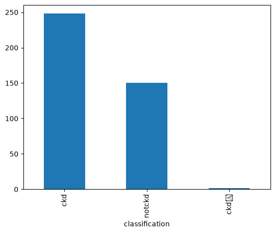
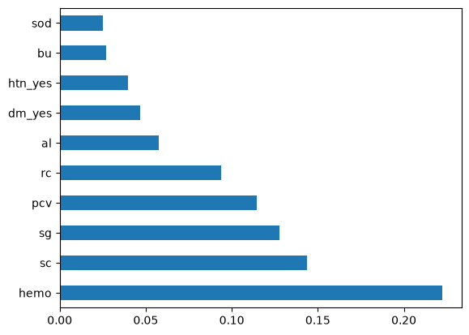
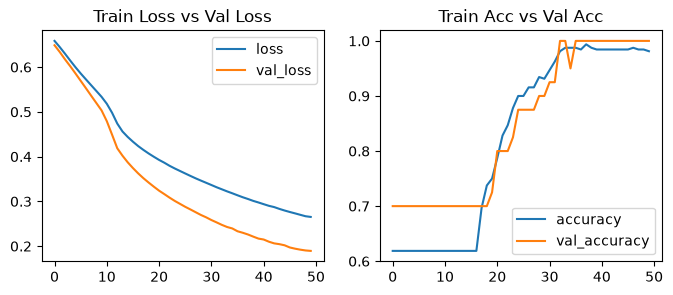
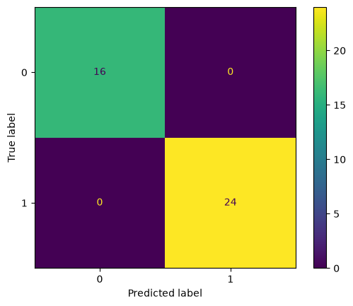

%pip install --upgrade -q matplotlib numpy pandas scikit-learn tensorboard tensorflowChronic Kidney Disease Prediction
Deep Learning
Classification
Overview
This notebook investigates the use of ulti Layer Perceptron (MLP) models to classify whether a patient is likely to have Chronic Kidney Disease (CKD) based on the following clinical and laboratory measurements data.
The analysis covers:
- Data preprocessing and Exploratory Data Analysis (EDA)
- Statistical analysis for feature selection
- Model training
- Model evaluation
The objective of this project is to perform an end-to-end machine learning process, feature selection, implement a Multi Layer Perceptron (MLP) model, and model hyperpamater choice affect classification performance.
Install and Import Packages
import numpy as np
import matplotlib.pyplot as plt
import pandas as pd
import tensorflow as tfLoad Dataset
df = pd.read_csv('data/ckd.csv')
df| id | age | bp | sg | al | su | rbc | pc | pcc | ba | ... | pcv | wc | rc | htn | dm | cad | appet | pe | ane | classification | |
|---|---|---|---|---|---|---|---|---|---|---|---|---|---|---|---|---|---|---|---|---|---|
| 0 | 0 | 48.0 | 80.0 | 1.020 | 1.0 | 0.0 | NaN | normal | notpresent | notpresent | ... | 44 | 7800 | 5.2 | yes | yes | no | good | no | no | ckd |
| 1 | 1 | 7.0 | 50.0 | 1.020 | 4.0 | 0.0 | NaN | normal | notpresent | notpresent | ... | 38 | 6000 | NaN | no | no | no | good | no | no | ckd |
| 2 | 2 | 62.0 | 80.0 | 1.010 | 2.0 | 3.0 | normal | normal | notpresent | notpresent | ... | 31 | 7500 | NaN | no | yes | no | poor | no | yes | ckd |
| 3 | 3 | 48.0 | 70.0 | 1.005 | 4.0 | 0.0 | normal | abnormal | present | notpresent | ... | 32 | 6700 | 3.9 | yes | no | no | poor | yes | yes | ckd |
| 4 | 4 | 51.0 | 80.0 | 1.010 | 2.0 | 0.0 | normal | normal | notpresent | notpresent | ... | 35 | 7300 | 4.6 | no | no | no | good | no | no | ckd |
| ... | ... | ... | ... | ... | ... | ... | ... | ... | ... | ... | ... | ... | ... | ... | ... | ... | ... | ... | ... | ... | ... |
| 395 | 395 | 55.0 | 80.0 | 1.020 | 0.0 | 0.0 | normal | normal | notpresent | notpresent | ... | 47 | 6700 | 4.9 | no | no | no | good | no | no | notckd |
| 396 | 396 | 42.0 | 70.0 | 1.025 | 0.0 | 0.0 | normal | normal | notpresent | notpresent | ... | 54 | 7800 | 6.2 | no | no | no | good | no | no | notckd |
| 397 | 397 | 12.0 | 80.0 | 1.020 | 0.0 | 0.0 | normal | normal | notpresent | notpresent | ... | 49 | 6600 | 5.4 | no | no | no | good | no | no | notckd |
| 398 | 398 | 17.0 | 60.0 | 1.025 | 0.0 | 0.0 | normal | normal | notpresent | notpresent | ... | 51 | 7200 | 5.9 | no | no | no | good | no | no | notckd |
| 399 | 399 | 58.0 | 80.0 | 1.025 | 0.0 | 0.0 | normal | normal | notpresent | notpresent | ... | 53 | 6800 | 6.1 | no | no | no | good | no | no | notckd |
400 rows × 26 columns
Data Preprocessing and EDA
Let’s take a look at the overview of the dataset.
df.info()<class 'pandas.DataFrame'>
RangeIndex: 400 entries, 0 to 399
Data columns (total 26 columns):
# Column Non-Null Count Dtype
--- ------ -------------- -----
0 id 400 non-null int64
1 age 391 non-null float64
2 bp 388 non-null float64
3 sg 353 non-null float64
4 al 354 non-null float64
5 su 351 non-null float64
6 rbc 248 non-null str
7 pc 335 non-null str
8 pcc 396 non-null str
9 ba 396 non-null str
10 bgr 356 non-null float64
11 bu 381 non-null float64
12 sc 383 non-null float64
13 sod 313 non-null float64
14 pot 312 non-null float64
15 hemo 348 non-null float64
16 pcv 330 non-null str
17 wc 295 non-null str
18 rc 270 non-null str
19 htn 398 non-null str
20 dm 398 non-null str
21 cad 398 non-null str
22 appet 399 non-null str
23 pe 399 non-null str
24 ane 399 non-null str
25 classification 400 non-null str
dtypes: float64(11), int64(1), str(14)
memory usage: 81.4 KBBased on the output above, here are some informations about the dataset. - The dataset has 400 rows and 26 columns. - The target variable is ‘classification’. - The features consists of numerical and categorical. - The dataset has missing values in almost every feature.
Let’s also see the distribution of the target variable (labels).
df['classification'].value_counts()classification
ckd 248
notckd 150
ckd\t 2
Name: count, dtype: int64df['classification'].value_counts().plot(kind='bar')C:\Users\HYPE AMD\AppData\Local\Packages\PythonSoftwareFoundation.Python.3.13_qbz5n2kfra8p0\LocalCache\local-packages\Python313\site-packages\IPython\core\events.py:100: UserWarning: Glyph 9 ( ) missing from font(s) DejaVu Sans.
func(*args, **kwargs)
C:\Users\HYPE AMD\AppData\Local\Packages\PythonSoftwareFoundation.Python.3.13_qbz5n2kfra8p0\LocalCache\local-packages\Python313\site-packages\IPython\core\pylabtools.py:170: UserWarning: Glyph 9 ( ) missing from font(s) DejaVu Sans.
fig.canvas.print_figure(bytes_io, **kw)
It looks like the dataset has some abnormal/inconsistent datas. Let’s check the unique values, mode, and datatype for every column. But, before that, let’s remove column ‘id’ since it is same as an index.
Remove Unnecessary Column
df = df.drop(columns=['id'])df.head()| age | bp | sg | al | su | rbc | pc | pcc | ba | bgr | ... | pcv | wc | rc | htn | dm | cad | appet | pe | ane | classification | |
|---|---|---|---|---|---|---|---|---|---|---|---|---|---|---|---|---|---|---|---|---|---|
| 0 | 48.0 | 80.0 | 1.020 | 1.0 | 0.0 | NaN | normal | notpresent | notpresent | 121.0 | ... | 44 | 7800 | 5.2 | yes | yes | no | good | no | no | ckd |
| 1 | 7.0 | 50.0 | 1.020 | 4.0 | 0.0 | NaN | normal | notpresent | notpresent | NaN | ... | 38 | 6000 | NaN | no | no | no | good | no | no | ckd |
| 2 | 62.0 | 80.0 | 1.010 | 2.0 | 3.0 | normal | normal | notpresent | notpresent | 423.0 | ... | 31 | 7500 | NaN | no | yes | no | poor | no | yes | ckd |
| 3 | 48.0 | 70.0 | 1.005 | 4.0 | 0.0 | normal | abnormal | present | notpresent | 117.0 | ... | 32 | 6700 | 3.9 | yes | no | no | poor | yes | yes | ckd |
| 4 | 51.0 | 80.0 | 1.010 | 2.0 | 0.0 | normal | normal | notpresent | notpresent | 106.0 | ... | 35 | 7300 | 4.6 | no | no | no | good | no | no | ckd |
5 rows × 25 columns
Handling Abnormal/Inconsistent Data
print('-----Unique Values, Mode, and Data Type in Each Column-----\n\n')
all_columns = df.columns.tolist()
for column in all_columns:
print(f'Unique Values in {column}:')
print(df[column].unique().tolist())
print()
print(f'Mode: {df[column].mode()[0]}')
print()
print(f'Data Type: {df[column].dtype}')
print('='*50)-----Unique Values, Mode, and Data Type in Each Column-----
Unique Values in age:
[48.0, 7.0, 62.0, 51.0, 60.0, 68.0, 24.0, 52.0, 53.0, 50.0, 63.0, 40.0, 47.0, 61.0, 21.0, 42.0, 75.0, 69.0, nan, 73.0, 70.0, 65.0, 76.0, 72.0, 82.0, 46.0, 45.0, 35.0, 54.0, 11.0, 59.0, 67.0, 15.0, 55.0, 44.0, 26.0, 64.0, 56.0, 5.0, 74.0, 38.0, 58.0, 71.0, 34.0, 17.0, 12.0, 43.0, 41.0, 57.0, 8.0, 39.0, 66.0, 81.0, 14.0, 27.0, 83.0, 30.0, 4.0, 3.0, 6.0, 32.0, 80.0, 49.0, 90.0, 78.0, 19.0, 2.0, 33.0, 36.0, 37.0, 23.0, 25.0, 20.0, 29.0, 28.0, 22.0, 79.0]
Mode: 60.0
Data Type: float64
==================================================
Unique Values in bp:
[80.0, 50.0, 70.0, 90.0, nan, 100.0, 60.0, 110.0, 140.0, 180.0, 120.0]
Mode: 80.0
Data Type: float64
==================================================
Unique Values in sg:
[1.02, 1.01, 1.005, 1.015, nan, 1.025]
Mode: 1.02
Data Type: float64
==================================================
Unique Values in al:
[1.0, 4.0, 2.0, 3.0, 0.0, nan, 5.0]
Mode: 0.0
Data Type: float64
==================================================
Unique Values in su:
[0.0, 3.0, 4.0, 1.0, nan, 2.0, 5.0]
Mode: 0.0
Data Type: float64
==================================================
Unique Values in rbc:
[nan, 'normal', 'abnormal']
Mode: normal
Data Type: str
==================================================
Unique Values in pc:
['normal', 'abnormal', nan]
Mode: normal
Data Type: str
==================================================
Unique Values in pcc:
['notpresent', 'present', nan]
Mode: notpresent
Data Type: str
==================================================
Unique Values in ba:
['notpresent', 'present', nan]
Mode: notpresent
Data Type: str
==================================================
Unique Values in bgr:
[121.0, nan, 423.0, 117.0, 106.0, 74.0, 100.0, 410.0, 138.0, 70.0, 490.0, 380.0, 208.0, 98.0, 157.0, 76.0, 99.0, 114.0, 263.0, 173.0, 95.0, 108.0, 156.0, 264.0, 123.0, 93.0, 107.0, 159.0, 140.0, 171.0, 270.0, 92.0, 137.0, 204.0, 79.0, 207.0, 124.0, 144.0, 91.0, 162.0, 246.0, 253.0, 141.0, 182.0, 86.0, 150.0, 146.0, 425.0, 112.0, 250.0, 360.0, 163.0, 129.0, 133.0, 102.0, 158.0, 165.0, 132.0, 104.0, 127.0, 415.0, 169.0, 251.0, 109.0, 280.0, 210.0, 219.0, 295.0, 94.0, 172.0, 101.0, 298.0, 153.0, 88.0, 226.0, 143.0, 115.0, 89.0, 297.0, 233.0, 294.0, 323.0, 125.0, 90.0, 308.0, 118.0, 224.0, 128.0, 122.0, 214.0, 213.0, 268.0, 256.0, 84.0, 105.0, 288.0, 139.0, 78.0, 273.0, 242.0, 424.0, 303.0, 148.0, 160.0, 192.0, 307.0, 220.0, 447.0, 309.0, 22.0, 111.0, 261.0, 215.0, 234.0, 131.0, 352.0, 80.0, 239.0, 110.0, 130.0, 184.0, 252.0, 113.0, 230.0, 341.0, 255.0, 103.0, 238.0, 248.0, 120.0, 241.0, 269.0, 201.0, 203.0, 463.0, 176.0, 82.0, 119.0, 97.0, 96.0, 81.0, 116.0, 134.0, 85.0, 83.0, 87.0, 75.0]
Mode: 99.0
Data Type: float64
==================================================
Unique Values in bu:
[36.0, 18.0, 53.0, 56.0, 26.0, 25.0, 54.0, 31.0, 60.0, 107.0, 55.0, 72.0, 86.0, 90.0, 162.0, 46.0, 87.0, 27.0, 148.0, 180.0, 163.0, nan, 50.0, 75.0, 45.0, 28.0, 155.0, 33.0, 39.0, 153.0, 29.0, 65.0, 103.0, 70.0, 80.0, 20.0, 202.0, 77.0, 89.0, 24.0, 17.0, 32.0, 114.0, 66.0, 38.0, 164.0, 142.0, 96.0, 391.0, 15.0, 111.0, 73.0, 19.0, 92.0, 35.0, 16.0, 139.0, 48.0, 85.0, 98.0, 186.0, 37.0, 47.0, 52.0, 82.0, 51.0, 106.0, 22.0, 217.0, 88.0, 118.0, 50.1, 71.0, 34.0, 40.0, 21.0, 219.0, 30.0, 125.0, 166.0, 49.0, 208.0, 176.0, 68.0, 145.0, 165.0, 322.0, 23.0, 235.0, 132.0, 76.0, 42.0, 44.0, 41.0, 113.0, 1.5, 146.0, 58.0, 133.0, 137.0, 67.0, 115.0, 223.0, 98.6, 158.0, 94.0, 74.0, 150.0, 61.0, 57.0, 95.0, 191.0, 93.0, 241.0, 64.0, 79.0, 215.0, 309.0, 10.0]
Mode: 46.0
Data Type: float64
==================================================
Unique Values in sc:
[1.2, 0.8, 1.8, 3.8, 1.4, 1.1, 24.0, 1.9, 7.2, 4.0, 2.7, 2.1, 4.6, 4.1, 9.6, 2.2, 5.2, 1.3, 1.6, 3.9, 76.0, 7.7, nan, 2.4, 7.3, 1.5, 2.5, 2.0, 3.4, 0.7, 1.0, 10.8, 6.3, 5.9, 0.9, 3.0, 3.25, 9.7, 6.4, 3.2, 32.0, 0.6, 6.1, 3.3, 6.7, 8.5, 2.8, 15.0, 2.9, 1.7, 3.6, 5.6, 6.5, 4.4, 10.2, 11.5, 0.5, 12.2, 5.3, 9.2, 13.8, 16.9, 6.0, 7.1, 18.0, 2.3, 13.0, 48.1, 14.2, 16.4, 2.6, 7.5, 4.3, 18.1, 11.8, 9.3, 6.8, 13.5, 12.8, 11.9, 12.0, 13.4, 15.2, 13.3, 0.4]
Mode: 1.2
Data Type: float64
==================================================
Unique Values in sod:
[nan, 111.0, 142.0, 104.0, 114.0, 131.0, 138.0, 135.0, 130.0, 141.0, 139.0, 4.5, 136.0, 129.0, 140.0, 132.0, 133.0, 134.0, 125.0, 163.0, 137.0, 128.0, 143.0, 127.0, 146.0, 126.0, 122.0, 147.0, 124.0, 115.0, 145.0, 113.0, 120.0, 150.0, 144.0]
Mode: 135.0
Data Type: float64
==================================================
Unique Values in pot:
[nan, 2.5, 3.2, 4.0, 3.7, 4.2, 5.8, 3.4, 6.4, 4.9, 4.1, 4.3, 5.2, 3.8, 4.6, 3.9, 4.7, 5.9, 4.8, 4.4, 6.6, 39.0, 5.5, 5.0, 3.5, 3.6, 7.6, 2.9, 4.5, 5.7, 5.4, 5.3, 47.0, 6.3, 5.1, 5.6, 3.0, 2.8, 2.7, 6.5, 3.3]
Mode: 3.5
Data Type: float64
==================================================
Unique Values in hemo:
[15.4, 11.3, 9.6, 11.2, 11.6, 12.2, 12.4, 10.8, 9.5, 9.4, 9.7, 9.8, 5.6, 7.6, 12.6, 12.1, 12.7, 10.3, 7.7, 10.9, nan, 11.1, 9.9, 12.5, 12.9, 10.1, 12.0, 13.0, 7.9, 9.3, 15.0, 10.0, 8.6, 13.6, 10.2, 10.5, 6.6, 11.0, 7.5, 15.6, 15.2, 4.8, 9.1, 8.1, 11.9, 13.5, 8.3, 7.1, 16.1, 10.4, 9.2, 6.2, 13.9, 14.1, 6.0, 11.8, 11.7, 11.4, 14.0, 8.2, 13.2, 6.1, 8.0, 12.3, 8.4, 14.3, 9.0, 8.7, 10.6, 13.1, 10.7, 5.5, 5.8, 6.8, 8.8, 8.5, 13.8, 11.5, 7.3, 13.7, 12.8, 13.4, 6.3, 3.1, 17.0, 15.9, 14.5, 15.5, 16.2, 14.4, 14.2, 16.3, 14.8, 16.5, 15.7, 13.3, 14.6, 16.4, 16.9, 16.0, 14.7, 16.6, 14.9, 16.7, 16.8, 15.8, 15.1, 17.1, 17.2, 15.3, 17.3, 17.4, 17.7, 17.8, 17.5, 17.6]
Mode: 15.0
Data Type: float64
==================================================
Unique Values in pcv:
['44', '38', '31', '32', '35', '39', '36', '33', '29', '28', nan, '16', '24', '37', '30', '34', '40', '45', '27', '48', '\t?', '52', '14', '22', '18', '42', '17', '46', '23', '19', '25', '41', '26', '15', '21', '43', '20', '\t43', '47', '9', '49', '50', '53', '51', '54']
Mode: 41
Data Type: str
==================================================
Unique Values in wc:
['7800', '6000', '7500', '6700', '7300', nan, '6900', '9600', '12100', '4500', '12200', '11000', '3800', '11400', '5300', '9200', '6200', '8300', '8400', '10300', '9800', '9100', '7900', '6400', '8600', '18900', '21600', '4300', '8500', '11300', '7200', '7700', '14600', '6300', '\t6200', '7100', '11800', '9400', '5500', '5800', '13200', '12500', '5600', '7000', '11900', '10400', '10700', '12700', '6800', '6500', '13600', '10200', '9000', '14900', '8200', '15200', '5000', '16300', '12400', '\t8400', '10500', '4200', '4700', '10900', '8100', '9500', '2200', '12800', '11200', '19100', '\t?', '12300', '16700', '2600', '26400', '8800', '7400', '4900', '8000', '12000', '15700', '4100', '5700', '11500', '5400', '10800', '9900', '5200', '5900', '9300', '9700', '5100', '6600']
Mode: 9800
Data Type: str
==================================================
Unique Values in rc:
['5.2', nan, '3.9', '4.6', '4.4', '5', '4.0', '3.7', '3.8', '3.4', '2.6', '2.8', '4.3', '3.2', '3.6', '4', '4.1', '4.9', '2.5', '4.2', '4.5', '3.1', '4.7', '3.5', '6.0', '5.0', '2.1', '5.6', '2.3', '2.9', '2.7', '8.0', '3.3', '3.0', '3', '2.4', '4.8', '\t?', '5.4', '6.1', '6.2', '6.3', '5.1', '5.8', '5.5', '5.3', '6.4', '5.7', '5.9', '6.5']
Mode: 5.2
Data Type: str
==================================================
Unique Values in htn:
['yes', 'no', nan]
Mode: no
Data Type: str
==================================================
Unique Values in dm:
['yes', 'no', ' yes', '\tno', '\tyes', nan]
Mode: no
Data Type: str
==================================================
Unique Values in cad:
['no', 'yes', '\tno', nan]
Mode: no
Data Type: str
==================================================
Unique Values in appet:
['good', 'poor', nan]
Mode: good
Data Type: str
==================================================
Unique Values in pe:
['no', 'yes', nan]
Mode: no
Data Type: str
==================================================
Unique Values in ane:
['no', 'yes', nan]
Mode: no
Data Type: str
==================================================
Unique Values in classification:
['ckd', 'ckd\t', 'notckd']
Mode: ckd
Data Type: str
==================================================We can see that there are some columns with numerical data type that were recognized as string data type because of the leading and trailing characters (spaces, or ) from a string.
Let’s divide the dataset into 2 part: numerical data type only and string data type only.
number_df = df.select_dtypes(include=['number'])
string_df = df.select_dtypes(include=['str'])number_df| age | bp | sg | al | su | bgr | bu | sc | sod | pot | hemo | |
|---|---|---|---|---|---|---|---|---|---|---|---|
| 0 | 48.0 | 80.0 | 1.020 | 1.0 | 0.0 | 121.0 | 36.0 | 1.2 | NaN | NaN | 15.4 |
| 1 | 7.0 | 50.0 | 1.020 | 4.0 | 0.0 | NaN | 18.0 | 0.8 | NaN | NaN | 11.3 |
| 2 | 62.0 | 80.0 | 1.010 | 2.0 | 3.0 | 423.0 | 53.0 | 1.8 | NaN | NaN | 9.6 |
| 3 | 48.0 | 70.0 | 1.005 | 4.0 | 0.0 | 117.0 | 56.0 | 3.8 | 111.0 | 2.5 | 11.2 |
| 4 | 51.0 | 80.0 | 1.010 | 2.0 | 0.0 | 106.0 | 26.0 | 1.4 | NaN | NaN | 11.6 |
| ... | ... | ... | ... | ... | ... | ... | ... | ... | ... | ... | ... |
| 395 | 55.0 | 80.0 | 1.020 | 0.0 | 0.0 | 140.0 | 49.0 | 0.5 | 150.0 | 4.9 | 15.7 |
| 396 | 42.0 | 70.0 | 1.025 | 0.0 | 0.0 | 75.0 | 31.0 | 1.2 | 141.0 | 3.5 | 16.5 |
| 397 | 12.0 | 80.0 | 1.020 | 0.0 | 0.0 | 100.0 | 26.0 | 0.6 | 137.0 | 4.4 | 15.8 |
| 398 | 17.0 | 60.0 | 1.025 | 0.0 | 0.0 | 114.0 | 50.0 | 1.0 | 135.0 | 4.9 | 14.2 |
| 399 | 58.0 | 80.0 | 1.025 | 0.0 | 0.0 | 131.0 | 18.0 | 1.1 | 141.0 | 3.5 | 15.8 |
400 rows × 11 columns
string_df| rbc | pc | pcc | ba | pcv | wc | rc | htn | dm | cad | appet | pe | ane | classification | |
|---|---|---|---|---|---|---|---|---|---|---|---|---|---|---|
| 0 | NaN | normal | notpresent | notpresent | 44 | 7800 | 5.2 | yes | yes | no | good | no | no | ckd |
| 1 | NaN | normal | notpresent | notpresent | 38 | 6000 | NaN | no | no | no | good | no | no | ckd |
| 2 | normal | normal | notpresent | notpresent | 31 | 7500 | NaN | no | yes | no | poor | no | yes | ckd |
| 3 | normal | abnormal | present | notpresent | 32 | 6700 | 3.9 | yes | no | no | poor | yes | yes | ckd |
| 4 | normal | normal | notpresent | notpresent | 35 | 7300 | 4.6 | no | no | no | good | no | no | ckd |
| ... | ... | ... | ... | ... | ... | ... | ... | ... | ... | ... | ... | ... | ... | ... |
| 395 | normal | normal | notpresent | notpresent | 47 | 6700 | 4.9 | no | no | no | good | no | no | notckd |
| 396 | normal | normal | notpresent | notpresent | 54 | 7800 | 6.2 | no | no | no | good | no | no | notckd |
| 397 | normal | normal | notpresent | notpresent | 49 | 6600 | 5.4 | no | no | no | good | no | no | notckd |
| 398 | normal | normal | notpresent | notpresent | 51 | 7200 | 5.9 | no | no | no | good | no | no | notckd |
| 399 | normal | normal | notpresent | notpresent | 53 | 6800 | 6.1 | no | no | no | good | no | no | notckd |
400 rows × 14 columns
Let’s removes leading and trailing characters (spaces, or ) from a string.
string_df = string_df.map(lambda data: data.strip() if isinstance(data, str) else data)
string_df| rbc | pc | pcc | ba | pcv | wc | rc | htn | dm | cad | appet | pe | ane | classification | |
|---|---|---|---|---|---|---|---|---|---|---|---|---|---|---|
| 0 | NaN | normal | notpresent | notpresent | 44 | 7800 | 5.2 | yes | yes | no | good | no | no | ckd |
| 1 | NaN | normal | notpresent | notpresent | 38 | 6000 | NaN | no | no | no | good | no | no | ckd |
| 2 | normal | normal | notpresent | notpresent | 31 | 7500 | NaN | no | yes | no | poor | no | yes | ckd |
| 3 | normal | abnormal | present | notpresent | 32 | 6700 | 3.9 | yes | no | no | poor | yes | yes | ckd |
| 4 | normal | normal | notpresent | notpresent | 35 | 7300 | 4.6 | no | no | no | good | no | no | ckd |
| ... | ... | ... | ... | ... | ... | ... | ... | ... | ... | ... | ... | ... | ... | ... |
| 395 | normal | normal | notpresent | notpresent | 47 | 6700 | 4.9 | no | no | no | good | no | no | notckd |
| 396 | normal | normal | notpresent | notpresent | 54 | 7800 | 6.2 | no | no | no | good | no | no | notckd |
| 397 | normal | normal | notpresent | notpresent | 49 | 6600 | 5.4 | no | no | no | good | no | no | notckd |
| 398 | normal | normal | notpresent | notpresent | 51 | 7200 | 5.9 | no | no | no | good | no | no | notckd |
| 399 | normal | normal | notpresent | notpresent | 53 | 6800 | 6.1 | no | no | no | good | no | no | notckd |
400 rows × 14 columns
Re-check the unique values.
print('-----Unique Values, Mode, and Data Type in Each Column-----\n\n')
string_columns = string_df.columns.tolist()
for column in string_columns:
print(f'Unique Values in {column}:')
print(string_df[column].unique().tolist())
print()
print(f'Mode: {string_df[column].mode()[0]}')
print()
print(f'Data Type: {string_df[column].dtype}')
print('='*50)-----Unique Values, Mode, and Data Type in Each Column-----
Unique Values in rbc:
[nan, 'normal', 'abnormal']
Mode: normal
Data Type: str
==================================================
Unique Values in pc:
['normal', 'abnormal', nan]
Mode: normal
Data Type: str
==================================================
Unique Values in pcc:
['notpresent', 'present', nan]
Mode: notpresent
Data Type: str
==================================================
Unique Values in ba:
['notpresent', 'present', nan]
Mode: notpresent
Data Type: str
==================================================
Unique Values in pcv:
['44', '38', '31', '32', '35', '39', '36', '33', '29', '28', nan, '16', '24', '37', '30', '34', '40', '45', '27', '48', '?', '52', '14', '22', '18', '42', '17', '46', '23', '19', '25', '41', '26', '15', '21', '43', '20', '47', '9', '49', '50', '53', '51', '54']
Mode: 41
Data Type: str
==================================================
Unique Values in wc:
['7800', '6000', '7500', '6700', '7300', nan, '6900', '9600', '12100', '4500', '12200', '11000', '3800', '11400', '5300', '9200', '6200', '8300', '8400', '10300', '9800', '9100', '7900', '6400', '8600', '18900', '21600', '4300', '8500', '11300', '7200', '7700', '14600', '6300', '7100', '11800', '9400', '5500', '5800', '13200', '12500', '5600', '7000', '11900', '10400', '10700', '12700', '6800', '6500', '13600', '10200', '9000', '14900', '8200', '15200', '5000', '16300', '12400', '10500', '4200', '4700', '10900', '8100', '9500', '2200', '12800', '11200', '19100', '?', '12300', '16700', '2600', '26400', '8800', '7400', '4900', '8000', '12000', '15700', '4100', '5700', '11500', '5400', '10800', '9900', '5200', '5900', '9300', '9700', '5100', '6600']
Mode: 9800
Data Type: str
==================================================
Unique Values in rc:
['5.2', nan, '3.9', '4.6', '4.4', '5', '4.0', '3.7', '3.8', '3.4', '2.6', '2.8', '4.3', '3.2', '3.6', '4', '4.1', '4.9', '2.5', '4.2', '4.5', '3.1', '4.7', '3.5', '6.0', '5.0', '2.1', '5.6', '2.3', '2.9', '2.7', '8.0', '3.3', '3.0', '3', '2.4', '4.8', '?', '5.4', '6.1', '6.2', '6.3', '5.1', '5.8', '5.5', '5.3', '6.4', '5.7', '5.9', '6.5']
Mode: 5.2
Data Type: str
==================================================
Unique Values in htn:
['yes', 'no', nan]
Mode: no
Data Type: str
==================================================
Unique Values in dm:
['yes', 'no', nan]
Mode: no
Data Type: str
==================================================
Unique Values in cad:
['no', 'yes', nan]
Mode: no
Data Type: str
==================================================
Unique Values in appet:
['good', 'poor', nan]
Mode: good
Data Type: str
==================================================
Unique Values in pe:
['no', 'yes', nan]
Mode: no
Data Type: str
==================================================
Unique Values in ane:
['no', 'yes', nan]
Mode: no
Data Type: str
==================================================
Unique Values in classification:
['ckd', 'notckd']
Mode: ckd
Data Type: str
==================================================We still need to change ‘?’ to NaN.
string_df = string_df.replace('?', np.nan)Re-check the unique values.
print('-----Unique Values, Mode, and Data Type in Each Column-----\n\n')
string_columns = string_df.columns.tolist()
for column in string_columns:
print(f'Unique Values in {column}:')
print(string_df[column].unique().tolist())
print()
print(f'Mode: {string_df[column].mode()[0]}')
print()
print(f'Data Type: {string_df[column].dtype}')
print('='*50)-----Unique Values, Mode, and Data Type in Each Column-----
Unique Values in rbc:
[nan, 'normal', 'abnormal']
Mode: normal
Data Type: str
==================================================
Unique Values in pc:
['normal', 'abnormal', nan]
Mode: normal
Data Type: str
==================================================
Unique Values in pcc:
['notpresent', 'present', nan]
Mode: notpresent
Data Type: str
==================================================
Unique Values in ba:
['notpresent', 'present', nan]
Mode: notpresent
Data Type: str
==================================================
Unique Values in pcv:
['44', '38', '31', '32', '35', '39', '36', '33', '29', '28', nan, '16', '24', '37', '30', '34', '40', '45', '27', '48', '52', '14', '22', '18', '42', '17', '46', '23', '19', '25', '41', '26', '15', '21', '43', '20', '47', '9', '49', '50', '53', '51', '54']
Mode: 41
Data Type: str
==================================================
Unique Values in wc:
['7800', '6000', '7500', '6700', '7300', nan, '6900', '9600', '12100', '4500', '12200', '11000', '3800', '11400', '5300', '9200', '6200', '8300', '8400', '10300', '9800', '9100', '7900', '6400', '8600', '18900', '21600', '4300', '8500', '11300', '7200', '7700', '14600', '6300', '7100', '11800', '9400', '5500', '5800', '13200', '12500', '5600', '7000', '11900', '10400', '10700', '12700', '6800', '6500', '13600', '10200', '9000', '14900', '8200', '15200', '5000', '16300', '12400', '10500', '4200', '4700', '10900', '8100', '9500', '2200', '12800', '11200', '19100', '12300', '16700', '2600', '26400', '8800', '7400', '4900', '8000', '12000', '15700', '4100', '5700', '11500', '5400', '10800', '9900', '5200', '5900', '9300', '9700', '5100', '6600']
Mode: 9800
Data Type: str
==================================================
Unique Values in rc:
['5.2', nan, '3.9', '4.6', '4.4', '5', '4.0', '3.7', '3.8', '3.4', '2.6', '2.8', '4.3', '3.2', '3.6', '4', '4.1', '4.9', '2.5', '4.2', '4.5', '3.1', '4.7', '3.5', '6.0', '5.0', '2.1', '5.6', '2.3', '2.9', '2.7', '8.0', '3.3', '3.0', '3', '2.4', '4.8', '5.4', '6.1', '6.2', '6.3', '5.1', '5.8', '5.5', '5.3', '6.4', '5.7', '5.9', '6.5']
Mode: 5.2
Data Type: str
==================================================
Unique Values in htn:
['yes', 'no', nan]
Mode: no
Data Type: str
==================================================
Unique Values in dm:
['yes', 'no', nan]
Mode: no
Data Type: str
==================================================
Unique Values in cad:
['no', 'yes', nan]
Mode: no
Data Type: str
==================================================
Unique Values in appet:
['good', 'poor', nan]
Mode: good
Data Type: str
==================================================
Unique Values in pe:
['no', 'yes', nan]
Mode: no
Data Type: str
==================================================
Unique Values in ane:
['no', 'yes', nan]
Mode: no
Data Type: str
==================================================
Unique Values in classification:
['ckd', 'notckd']
Mode: ckd
Data Type: str
==================================================Convert ‘pcv’, ‘wc’, and ‘rc’ data type to float.
string_df['pcv'] = string_df['pcv'].astype(float)
string_df['wc'] = string_df['wc'].astype(float)
string_df['rc'] = string_df['rc'].astype(float)Concat the number_df and string_df to get back the full dataframe.
df = pd.concat([number_df, string_df], axis=1)
df| age | bp | sg | al | su | bgr | bu | sc | sod | pot | ... | pcv | wc | rc | htn | dm | cad | appet | pe | ane | classification | |
|---|---|---|---|---|---|---|---|---|---|---|---|---|---|---|---|---|---|---|---|---|---|
| 0 | 48.0 | 80.0 | 1.020 | 1.0 | 0.0 | 121.0 | 36.0 | 1.2 | NaN | NaN | ... | 44.0 | 7800.0 | 5.2 | yes | yes | no | good | no | no | ckd |
| 1 | 7.0 | 50.0 | 1.020 | 4.0 | 0.0 | NaN | 18.0 | 0.8 | NaN | NaN | ... | 38.0 | 6000.0 | NaN | no | no | no | good | no | no | ckd |
| 2 | 62.0 | 80.0 | 1.010 | 2.0 | 3.0 | 423.0 | 53.0 | 1.8 | NaN | NaN | ... | 31.0 | 7500.0 | NaN | no | yes | no | poor | no | yes | ckd |
| 3 | 48.0 | 70.0 | 1.005 | 4.0 | 0.0 | 117.0 | 56.0 | 3.8 | 111.0 | 2.5 | ... | 32.0 | 6700.0 | 3.9 | yes | no | no | poor | yes | yes | ckd |
| 4 | 51.0 | 80.0 | 1.010 | 2.0 | 0.0 | 106.0 | 26.0 | 1.4 | NaN | NaN | ... | 35.0 | 7300.0 | 4.6 | no | no | no | good | no | no | ckd |
| ... | ... | ... | ... | ... | ... | ... | ... | ... | ... | ... | ... | ... | ... | ... | ... | ... | ... | ... | ... | ... | ... |
| 395 | 55.0 | 80.0 | 1.020 | 0.0 | 0.0 | 140.0 | 49.0 | 0.5 | 150.0 | 4.9 | ... | 47.0 | 6700.0 | 4.9 | no | no | no | good | no | no | notckd |
| 396 | 42.0 | 70.0 | 1.025 | 0.0 | 0.0 | 75.0 | 31.0 | 1.2 | 141.0 | 3.5 | ... | 54.0 | 7800.0 | 6.2 | no | no | no | good | no | no | notckd |
| 397 | 12.0 | 80.0 | 1.020 | 0.0 | 0.0 | 100.0 | 26.0 | 0.6 | 137.0 | 4.4 | ... | 49.0 | 6600.0 | 5.4 | no | no | no | good | no | no | notckd |
| 398 | 17.0 | 60.0 | 1.025 | 0.0 | 0.0 | 114.0 | 50.0 | 1.0 | 135.0 | 4.9 | ... | 51.0 | 7200.0 | 5.9 | no | no | no | good | no | no | notckd |
| 399 | 58.0 | 80.0 | 1.025 | 0.0 | 0.0 | 131.0 | 18.0 | 1.1 | 141.0 | 3.5 | ... | 53.0 | 6800.0 | 6.1 | no | no | no | good | no | no | notckd |
400 rows × 25 columns
df.info()<class 'pandas.DataFrame'>
RangeIndex: 400 entries, 0 to 399
Data columns (total 25 columns):
# Column Non-Null Count Dtype
--- ------ -------------- -----
0 age 391 non-null float64
1 bp 388 non-null float64
2 sg 353 non-null float64
3 al 354 non-null float64
4 su 351 non-null float64
5 bgr 356 non-null float64
6 bu 381 non-null float64
7 sc 383 non-null float64
8 sod 313 non-null float64
9 pot 312 non-null float64
10 hemo 348 non-null float64
11 rbc 248 non-null str
12 pc 335 non-null str
13 pcc 396 non-null str
14 ba 396 non-null str
15 pcv 329 non-null float64
16 wc 294 non-null float64
17 rc 269 non-null float64
18 htn 398 non-null str
19 dm 398 non-null str
20 cad 398 non-null str
21 appet 399 non-null str
22 pe 399 non-null str
23 ane 399 non-null str
24 classification 400 non-null str
dtypes: float64(14), str(11)
memory usage: 78.3 KBHandling Missing Values
df.isna().sum()age 9
bp 12
sg 47
al 46
su 49
bgr 44
bu 19
sc 17
sod 87
pot 88
hemo 52
rbc 152
pc 65
pcc 4
ba 4
pcv 71
wc 106
rc 131
htn 2
dm 2
cad 2
appet 1
pe 1
ane 1
classification 0
dtype: int64Train-Test Split
Before handling the missing values, split the the data into train, validation, and test set. Here, we are using 80:10:10 ratio for the train, validation, and test set, respectively.
We must split our data first, to avoid data leakage
from sklearn.model_selection import train_test_split
target = 'classification'
y = df[target].values
X_df = df.drop(columns=[target])
X_train_df, X_valtest_df, y_train, y_valtest = train_test_split(X_df, y, test_size=0.2, random_state=42)
X_val_df, X_test_df, y_val, y_test = train_test_split(X_valtest_df, y_valtest, test_size=0.5, random_state=42)
print(f'X_train_df shape:{X_train_df.shape}')
print(f'X_val_df shape:{X_val_df.shape}')
print(f'X_test_df shape:{X_test_df.shape}')
print(f'y_train shape:{y_train.shape}')
print(f'y_val shape:{y_val.shape}')
print(f'y_test shape:{y_test.shape}')X_train_df shape:(320, 24)
X_val_df shape:(40, 24)
X_test_df shape:(40, 24)
y_train shape:(320,)
y_val shape:(40,)
y_test shape:(40,)y_train<StringArray>
[ 'ckd', 'ckd', 'ckd', 'notckd', 'notckd', 'ckd', 'ckd',
'notckd', 'ckd', 'ckd',
...
'ckd', 'ckd', 'notckd', 'ckd', 'ckd', 'ckd', 'ckd',
'notckd', 'notckd', 'ckd']
Length: 320, dtype: stry_val<StringArray>
[ 'ckd', 'ckd', 'notckd', 'ckd', 'notckd', 'ckd', 'notckd',
'ckd', 'ckd', 'ckd', 'ckd', 'ckd', 'ckd', 'ckd',
'ckd', 'ckd', 'ckd', 'ckd', 'ckd', 'notckd', 'ckd',
'notckd', 'notckd', 'ckd', 'ckd', 'ckd', 'ckd', 'notckd',
'ckd', 'notckd', 'notckd', 'ckd', 'ckd', 'notckd', 'notckd',
'ckd', 'ckd', 'ckd', 'ckd', 'notckd']
Length: 40, dtype: stry_test<StringArray>
['notckd', 'ckd', 'notckd', 'ckd', 'ckd', 'notckd', 'ckd',
'notckd', 'ckd', 'ckd', 'ckd', 'ckd', 'notckd', 'ckd',
'notckd', 'notckd', 'ckd', 'notckd', 'ckd', 'notckd', 'ckd',
'ckd', 'ckd', 'ckd', 'ckd', 'notckd', 'ckd', 'notckd',
'notckd', 'ckd', 'ckd', 'notckd', 'ckd', 'ckd', 'ckd',
'notckd', 'notckd', 'notckd', 'ckd', 'ckd']
Length: 40, dtype: strImpute the numerical features with median and categorical features with mode.
# first, divide the data into 2 parts: numerical features only and categorical features only
X_train_num_df = X_train_df.select_dtypes(include=['number'])
X_val_num_df = X_val_df.select_dtypes(include=['number'])
X_test_num_df = X_test_df.select_dtypes(include=['number'])
X_train_cat_df = X_train_df.select_dtypes(include=['str'])
X_val_cat_df = X_val_df.select_dtypes(include=['str'])
X_test_cat_df = X_test_df.select_dtypes(include=['str'])
print(f'X_train_num_df shape:{X_train_num_df.shape}')
print(f'X_val_num_df shape:{X_val_num_df.shape}')
print(f'X_test_num_df shape:{X_test_num_df.shape}')
print(f'X_train_cat_df shape:{X_train_cat_df.shape}')
print(f'X_val_cat_df shape:{X_val_cat_df.shape}')
print(f'X_test_cat_df shape:{X_test_cat_df.shape}')X_train_num_df shape:(320, 14)
X_val_num_df shape:(40, 14)
X_test_num_df shape:(40, 14)
X_train_cat_df shape:(320, 10)
X_val_cat_df shape:(40, 10)
X_test_cat_df shape:(40, 10)# impute missing values using data train's feature median for numerical features
num_columns = X_train_num_df.columns.tolist()
for column in num_columns:
train_column_median = X_train_num_df[column].median()
X_train_num_df[column] = X_train_num_df[column].fillna(train_column_median)
X_val_num_df[column] = X_val_num_df[column].fillna(train_column_median)
X_test_num_df[column] = X_test_num_df[column].fillna(train_column_median)
# impute missing values using data train's feature mode for categorical features
cat_columns = X_train_cat_df.columns.tolist()
for column in cat_columns:
train_column_mode = X_train_cat_df[column].mode()[0]
X_train_cat_df[column] = X_train_cat_df[column].fillna(train_column_mode)
X_val_cat_df[column] = X_val_cat_df[column].fillna(train_column_mode)
X_test_cat_df[column] = X_test_cat_df[column].fillna(train_column_mode)Re-check the missing values.
X_train_num_df_nan = X_train_num_df.isna().sum()
X_val_num_df_nan = X_val_num_df.isna().sum()
X_test_num_df_nan = X_test_num_df.isna().sum()
X_train_cat_df_nan = X_train_cat_df.isna().sum()
X_val_cat_df_nan = X_val_cat_df.isna().sum()
X_test_cat_df_nan = X_test_cat_df.isna().sum()
print(X_train_num_df_nan, '\n')
print(X_val_num_df_nan, '\n')
print(X_test_num_df_nan, '\n')
print(X_train_cat_df_nan, '\n')
print(X_val_cat_df_nan, '\n')
print(X_test_cat_df_nan, '\n')age 0
bp 0
sg 0
al 0
su 0
bgr 0
bu 0
sc 0
sod 0
pot 0
hemo 0
pcv 0
wc 0
rc 0
dtype: int64
age 0
bp 0
sg 0
al 0
su 0
bgr 0
bu 0
sc 0
sod 0
pot 0
hemo 0
pcv 0
wc 0
rc 0
dtype: int64
age 0
bp 0
sg 0
al 0
su 0
bgr 0
bu 0
sc 0
sod 0
pot 0
hemo 0
pcv 0
wc 0
rc 0
dtype: int64
rbc 0
pc 0
pcc 0
ba 0
htn 0
dm 0
cad 0
appet 0
pe 0
ane 0
dtype: int64
rbc 0
pc 0
pcc 0
ba 0
htn 0
dm 0
cad 0
appet 0
pe 0
ane 0
dtype: int64
rbc 0
pc 0
pcc 0
ba 0
htn 0
dm 0
cad 0
appet 0
pe 0
ane 0
dtype: int64
Numerical Features Scaling
The numerical features exhibit vastly different scales and measurement ranges. MinMaxScaler is applied to transform all numerical features to possess minimum value 0 and maximum value 1.
from sklearn.preprocessing import MinMaxScaler
scaler = MinMaxScaler()
X_train_num = X_train_num_df.values
X_val_num = X_val_num_df.values
X_test_num = X_test_num_df.values
X_train_num_scaled = scaler.fit_transform(X_train_num)
X_val_num_scaled = scaler.transform(X_val_num)
X_test_num_scaled = scaler.transform(X_test_num)
X_train_num_scaled_df = pd.DataFrame(data=X_train_num_scaled, columns=num_columns)
X_val_num_scaled_df = pd.DataFrame(data=X_val_num_scaled, columns=num_columns)
X_test_num_scaled_df = pd.DataFrame(data=X_test_num_scaled, columns=num_columns)X_train_num_scaled_df.head()| age | bp | sg | al | su | bgr | bu | sc | sod | pot | hemo | pcv | wc | rc | |
|---|---|---|---|---|---|---|---|---|---|---|---|---|---|---|
| 0 | 0.522727 | 0.153846 | 0.00 | 0.8 | 0.0 | 0.111905 | 0.120735 | 0.044974 | 0.671924 | 0.000000 | 0.551020 | 0.511111 | 0.185950 | 0.305085 |
| 1 | 0.659091 | 0.384615 | 1.00 | 0.0 | 0.6 | 0.459524 | 0.044619 | 0.011905 | 0.823344 | 0.040449 | 0.653061 | 0.622222 | 0.380165 | 0.372881 |
| 2 | 0.863636 | 0.076923 | 0.75 | 0.0 | 0.0 | 0.104762 | 0.167979 | 0.033069 | 0.823344 | 0.076404 | 0.333333 | 0.333333 | 0.241736 | 0.457627 |
| 3 | 0.431818 | 0.230769 | 1.00 | 0.0 | 0.0 | 0.166667 | 0.000000 | 0.010582 | 0.823344 | 0.056180 | 0.809524 | 0.866667 | 0.338843 | 0.406780 |
| 4 | 0.193182 | 0.230769 | 0.75 | 0.0 | 0.0 | 0.088095 | 0.034121 | 0.003968 | 0.861199 | 0.038202 | 0.768707 | 0.777778 | 0.241736 | 0.457627 |
X_val_num_scaled_df.head()| age | bp | sg | al | su | bgr | bu | sc | sod | pot | hemo | pcv | wc | rc | |
|---|---|---|---|---|---|---|---|---|---|---|---|---|---|---|
| 0 | 0.625000 | 0.230769 | 0.50 | 0.0 | 0.0 | 0.119048 | 0.099738 | 0.015873 | 0.842271 | 0.042697 | 0.557823 | 0.600000 | 0.206612 | 0.288136 |
| 1 | 0.647727 | 0.384615 | 0.50 | 0.8 | 0.4 | 0.440476 | 0.320210 | 0.164021 | 0.823344 | 0.071910 | 0.285714 | 0.244444 | 0.314050 | 0.305085 |
| 2 | 0.636364 | 0.153846 | 1.00 | 0.0 | 0.0 | 0.042857 | 0.015748 | 0.009259 | 0.899054 | 0.022472 | 0.904762 | 0.977778 | 0.285124 | 0.525424 |
| 3 | 0.784091 | 0.076923 | 0.75 | 0.6 | 0.4 | 0.842857 | 0.099738 | 0.014550 | 0.804416 | 0.033708 | 0.530612 | 0.488889 | 0.241736 | 0.457627 |
| 4 | 0.602273 | 0.230769 | 0.75 | 0.0 | 0.0 | 0.150000 | 0.018373 | 0.010582 | 0.823344 | 0.051685 | 0.687075 | 0.711111 | 0.190083 | 0.542373 |
X_test_num_scaled_df.head()| age | bp | sg | al | su | bgr | bu | sc | sod | pot | hemo | pcv | wc | rc | |
|---|---|---|---|---|---|---|---|---|---|---|---|---|---|---|
| 0 | 0.602273 | 0.230769 | 0.75 | 0.0 | 0.0 | 0.166667 | 0.102362 | 0.001323 | 0.917981 | 0.053933 | 0.857143 | 0.844444 | 0.185950 | 0.474576 |
| 1 | 0.193182 | 0.153846 | 0.75 | 0.0 | 0.0 | 0.126190 | 0.078740 | 0.010582 | 0.842271 | 0.042697 | 0.571429 | 0.711111 | 0.194215 | 0.457627 |
| 2 | 0.386364 | 0.230769 | 1.00 | 0.0 | 0.0 | 0.035714 | 0.015748 | 0.009259 | 0.867508 | 0.035955 | 0.850340 | 0.777778 | 0.148760 | 0.711864 |
| 3 | 0.340909 | 0.307692 | 1.00 | 0.2 | 0.0 | 0.126190 | 0.559055 | 0.234127 | 0.684543 | 0.089888 | 0.163265 | 0.133333 | 0.016529 | 0.118644 |
| 4 | 0.659091 | 0.307692 | 0.75 | 0.0 | 0.0 | 0.473810 | 0.107612 | 0.031746 | 0.842271 | 0.026966 | 0.571429 | 0.577778 | 0.241736 | 0.457627 |
Categorical Features Encoding
y_train_encoded = np.where(y_train == 'ckd', 1, 0)
y_val_encoded = np.where(y_val == 'ckd', 1, 0)
y_test_encoded = np.where(y_test == 'ckd', 1, 0)
X_train_cat_encoded_df = pd.get_dummies(X_train_cat_df, prefix=cat_columns, drop_first=True, dtype=int)
X_val_cat_encoded_df = pd.get_dummies(X_val_cat_df, prefix=cat_columns, drop_first=True, dtype=int)
X_test_cat_encoded_df = pd.get_dummies(X_test_cat_df, prefix=cat_columns, drop_first=True, dtype=int)print(f'y_train_encoded: {y_train_encoded}\n')
print(f'y_val_encoded: {y_val_encoded}\n')
print(f'y_test_encoded: {y_test_encoded}')y_train_encoded: [1 1 1 0 0 1 1 0 1 1 1 0 1 1 1 0 0 0 1 1 1 1 1 1 1 1 1 1 0 0 1 0 0 0 0 1 1
0 0 0 1 1 1 0 1 1 0 0 1 1 0 1 0 1 1 1 1 0 1 0 1 1 0 1 1 0 1 1 1 0 1 0 0 1
1 1 1 1 0 0 0 1 0 1 0 1 0 1 1 1 1 1 1 1 1 0 1 1 1 1 1 1 1 1 1 1 0 1 0 1 1
1 0 1 0 0 0 0 0 0 1 1 0 1 0 1 1 1 0 1 1 1 1 0 0 1 0 0 0 0 0 1 0 1 1 1 1 0
1 1 1 1 1 1 1 0 1 0 0 0 0 1 1 0 1 1 0 1 1 0 1 1 1 0 1 0 1 1 1 1 1 1 1 1 1
1 0 0 1 1 1 1 0 0 1 1 0 1 0 0 1 0 0 1 1 0 1 1 1 1 1 1 1 0 1 0 1 0 1 0 0 1
0 1 1 1 1 1 1 0 1 1 1 0 0 1 0 0 1 1 1 0 0 0 0 0 0 0 1 1 1 1 1 0 0 1 1 1 1
1 1 1 0 1 0 1 0 0 1 1 0 1 0 1 0 0 1 0 0 0 1 1 1 1 1 0 1 1 1 1 0 1 0 1 0 1
0 1 0 0 0 0 1 1 1 0 1 0 1 0 1 1 0 1 1 1 1 0 0 1]
y_val_encoded: [1 1 0 1 0 1 0 1 1 1 1 1 1 1 1 1 1 1 1 0 1 0 0 1 1 1 1 0 1 0 0 1 1 0 0 1 1
1 1 0]
y_test_encoded: [0 1 0 1 1 0 1 0 1 1 1 1 0 1 0 0 1 0 1 0 1 1 1 1 1 0 1 0 0 1 1 0 1 1 1 0 0
0 1 1]X_train_cat_encoded_df.head()| rbc_normal | pc_normal | pcc_present | ba_present | htn_yes | dm_yes | cad_yes | appet_poor | pe_yes | ane_yes | |
|---|---|---|---|---|---|---|---|---|---|---|
| 3 | 1 | 0 | 1 | 0 | 1 | 0 | 0 | 1 | 1 | 1 |
| 18 | 1 | 1 | 0 | 0 | 1 | 1 | 1 | 0 | 0 | 0 |
| 202 | 1 | 1 | 0 | 0 | 0 | 1 | 0 | 0 | 0 | 1 |
| 250 | 1 | 1 | 0 | 0 | 0 | 0 | 0 | 0 | 0 | 0 |
| 274 | 1 | 1 | 0 | 0 | 0 | 0 | 0 | 0 | 0 | 0 |
X_val_cat_encoded_df.head()| rbc_normal | pc_normal | pcc_present | ba_present | htn_yes | dm_yes | cad_yes | appet_poor | pe_yes | ane_yes | |
|---|---|---|---|---|---|---|---|---|---|---|
| 227 | 1 | 1 | 0 | 0 | 1 | 1 | 0 | 0 | 0 | 0 |
| 210 | 1 | 1 | 0 | 0 | 1 | 1 | 1 | 0 | 0 | 1 |
| 376 | 1 | 1 | 0 | 0 | 0 | 0 | 0 | 0 | 0 | 0 |
| 158 | 1 | 1 | 1 | 0 | 1 | 1 | 1 | 0 | 0 | 0 |
| 266 | 1 | 1 | 0 | 0 | 0 | 0 | 0 | 0 | 0 | 0 |
X_test_cat_encoded_df.head()| rbc_normal | pc_normal | pcc_present | ba_present | htn_yes | dm_yes | cad_yes | appet_poor | pe_yes | ane_yes | |
|---|---|---|---|---|---|---|---|---|---|---|
| 395 | 1 | 1 | 0 | 0 | 0 | 0 | 0 | 0 | 0 | 0 |
| 209 | 1 | 1 | 0 | 0 | 0 | 0 | 0 | 0 | 0 | 0 |
| 391 | 1 | 1 | 0 | 0 | 0 | 0 | 0 | 0 | 0 | 0 |
| 193 | 0 | 0 | 0 | 0 | 1 | 1 | 0 | 1 | 1 | 1 |
| 231 | 1 | 1 | 0 | 0 | 1 | 1 | 1 | 0 | 1 | 0 |
Concat the scaled numerical dataframe and the encoded categorical dataframe.
X_train_preprocessed_df = pd.concat([X_train_num_scaled_df, X_train_cat_encoded_df.reset_index(drop=True)], axis=1)
X_val_preprocessed_df = pd.concat([X_val_num_scaled_df, X_val_cat_encoded_df.reset_index(drop=True)], axis=1)
X_test_preprocessed_df = pd.concat([X_test_num_scaled_df, X_test_cat_encoded_df.reset_index(drop=True)], axis=1)X_train_preprocessed_df| age | bp | sg | al | su | bgr | bu | sc | sod | pot | ... | rbc_normal | pc_normal | pcc_present | ba_present | htn_yes | dm_yes | cad_yes | appet_poor | pe_yes | ane_yes | |
|---|---|---|---|---|---|---|---|---|---|---|---|---|---|---|---|---|---|---|---|---|---|
| 0 | 0.522727 | 0.153846 | 0.00 | 0.8 | 0.0 | 0.111905 | 0.120735 | 0.044974 | 0.671924 | 0.000000 | ... | 1 | 0 | 1 | 0 | 1 | 0 | 0 | 1 | 1 | 1 |
| 1 | 0.659091 | 0.384615 | 1.00 | 0.0 | 0.6 | 0.459524 | 0.044619 | 0.011905 | 0.823344 | 0.040449 | ... | 1 | 1 | 0 | 0 | 1 | 1 | 1 | 0 | 0 | 0 |
| 2 | 0.863636 | 0.076923 | 0.75 | 0.0 | 0.0 | 0.104762 | 0.167979 | 0.033069 | 0.823344 | 0.076404 | ... | 1 | 1 | 0 | 0 | 0 | 1 | 0 | 0 | 0 | 1 |
| 3 | 0.431818 | 0.230769 | 1.00 | 0.0 | 0.0 | 0.166667 | 0.000000 | 0.010582 | 0.823344 | 0.056180 | ... | 1 | 1 | 0 | 0 | 0 | 0 | 0 | 0 | 0 | 0 |
| 4 | 0.193182 | 0.230769 | 0.75 | 0.0 | 0.0 | 0.088095 | 0.034121 | 0.003968 | 0.861199 | 0.038202 | ... | 1 | 1 | 0 | 0 | 0 | 0 | 0 | 0 | 0 | 0 |
| ... | ... | ... | ... | ... | ... | ... | ... | ... | ... | ... | ... | ... | ... | ... | ... | ... | ... | ... | ... | ... | ... |
| 315 | 0.500000 | 0.076923 | 0.25 | 0.2 | 0.0 | 0.221429 | 0.215223 | 0.038360 | 0.861199 | 0.033708 | ... | 1 | 1 | 0 | 0 | 1 | 1 | 0 | 0 | 0 | 0 |
| 316 | 0.545455 | 0.307692 | 0.75 | 0.0 | 0.0 | 0.045238 | 0.283465 | 0.075397 | 0.772871 | 0.042697 | ... | 1 | 1 | 0 | 0 | 1 | 1 | 0 | 0 | 1 | 1 |
| 317 | 0.238636 | 0.230769 | 1.00 | 0.0 | 0.0 | 0.097619 | 0.062992 | 0.009259 | 0.886435 | 0.033708 | ... | 1 | 1 | 0 | 0 | 0 | 0 | 0 | 0 | 0 | 0 |
| 318 | 0.409091 | 0.230769 | 0.75 | 0.0 | 0.0 | 0.069048 | 0.023622 | 0.001323 | 0.899054 | 0.022472 | ... | 1 | 1 | 0 | 0 | 0 | 0 | 0 | 0 | 0 | 0 |
| 319 | 0.170455 | 0.076923 | 0.25 | 0.0 | 0.0 | 0.052381 | 0.057743 | 0.022487 | 0.861199 | 0.038202 | ... | 1 | 1 | 0 | 0 | 0 | 0 | 0 | 0 | 0 | 0 |
320 rows × 24 columns
X_val_preprocessed_df| age | bp | sg | al | su | bgr | bu | sc | sod | pot | ... | rbc_normal | pc_normal | pcc_present | ba_present | htn_yes | dm_yes | cad_yes | appet_poor | pe_yes | ane_yes | |
|---|---|---|---|---|---|---|---|---|---|---|---|---|---|---|---|---|---|---|---|---|---|
| 0 | 0.625000 | 0.230769 | 0.50 | 0.0 | 0.0 | 0.119048 | 0.099738 | 0.015873 | 0.842271 | 0.042697 | ... | 1 | 1 | 0 | 0 | 1 | 1 | 0 | 0 | 0 | 0 |
| 1 | 0.647727 | 0.384615 | 0.50 | 0.8 | 0.4 | 0.440476 | 0.320210 | 0.164021 | 0.823344 | 0.071910 | ... | 1 | 1 | 0 | 0 | 1 | 1 | 1 | 0 | 0 | 1 |
| 2 | 0.636364 | 0.153846 | 1.00 | 0.0 | 0.0 | 0.042857 | 0.015748 | 0.009259 | 0.899054 | 0.022472 | ... | 1 | 1 | 0 | 0 | 0 | 0 | 0 | 0 | 0 | 0 |
| 3 | 0.784091 | 0.076923 | 0.75 | 0.6 | 0.4 | 0.842857 | 0.099738 | 0.014550 | 0.804416 | 0.033708 | ... | 1 | 1 | 1 | 0 | 1 | 1 | 1 | 0 | 0 | 0 |
| 4 | 0.602273 | 0.230769 | 0.75 | 0.0 | 0.0 | 0.150000 | 0.018373 | 0.010582 | 0.823344 | 0.051685 | ... | 1 | 1 | 0 | 0 | 0 | 0 | 0 | 0 | 0 | 0 |
| 5 | 0.806818 | 0.307692 | 0.50 | 0.6 | 0.0 | 0.088095 | 0.060367 | 0.014550 | 0.861199 | 0.047191 | ... | 1 | 0 | 1 | 0 | 0 | 0 | 0 | 1 | 0 | 0 |
| 6 | 0.352273 | 0.076923 | 1.00 | 0.0 | 0.0 | 0.023810 | 0.039370 | 0.006614 | 0.892744 | 0.022472 | ... | 1 | 1 | 0 | 0 | 0 | 0 | 0 | 0 | 0 | 0 |
| 7 | 0.670455 | 0.307692 | 0.50 | 0.0 | 0.4 | 0.126190 | 0.078740 | 0.010582 | 0.842271 | 0.042697 | ... | 1 | 1 | 0 | 0 | 0 | 1 | 0 | 1 | 0 | 1 |
| 8 | 0.659091 | 0.307692 | 0.50 | 0.6 | 0.0 | 0.009524 | 0.039370 | 0.009259 | 0.867508 | 0.015730 | ... | 1 | 1 | 0 | 0 | 1 | 1 | 0 | 0 | 1 | 0 |
| 9 | 0.590909 | 0.153846 | 0.75 | 0.0 | 0.0 | 0.054762 | 0.380577 | 0.091270 | 0.804416 | 0.053933 | ... | 1 | 1 | 0 | 0 | 1 | 1 | 0 | 0 | 0 | 0 |
| 10 | 0.761364 | 0.076923 | 0.75 | 0.0 | 0.0 | 0.240476 | 0.041995 | 0.630952 | 0.842271 | 0.042697 | ... | 1 | 1 | 0 | 0 | 1 | 0 | 0 | 1 | 0 | 0 |
| 11 | 0.215909 | 0.307692 | 0.25 | 0.8 | 0.0 | 0.088095 | 0.078740 | 0.017196 | 0.760252 | 0.022472 | ... | 1 | 0 | 1 | 1 | 0 | 0 | 0 | 0 | 0 | 1 |
| 12 | 0.511364 | 0.384615 | 0.25 | 0.0 | 0.0 | 0.319048 | 0.049869 | 0.007937 | 0.848580 | 0.038202 | ... | 1 | 1 | 0 | 0 | 1 | 0 | 0 | 0 | 0 | 1 |
| 13 | 0.659091 | 0.307692 | 0.25 | 0.6 | 1.0 | 1.000000 | 0.223097 | 0.030423 | 0.798107 | 0.029213 | ... | 0 | 1 | 0 | 1 | 1 | 1 | 0 | 0 | 0 | 0 |
| 14 | 0.375000 | 0.230769 | 0.00 | 0.6 | 0.0 | 0.126190 | 0.078740 | 0.010582 | 0.842271 | 0.042697 | ... | 0 | 1 | 0 | 0 | 0 | 0 | 0 | 0 | 1 | 0 |
| 15 | 0.113636 | 0.076923 | 0.50 | 0.6 | 0.0 | 0.126190 | 0.107612 | 0.018519 | 0.842271 | 0.042697 | ... | 0 | 0 | 1 | 0 | 0 | 0 | 0 | 0 | 0 | 0 |
| 16 | 0.522727 | 0.230769 | 1.00 | 0.8 | 0.0 | 0.059524 | 0.401575 | 0.096561 | 0.829653 | 0.029213 | ... | 1 | 0 | 0 | 0 | 1 | 0 | 0 | 0 | 0 | 1 |
| 17 | 0.522727 | 0.230769 | 0.75 | 0.2 | 0.0 | 0.121429 | 0.068241 | 0.010582 | 0.842271 | 0.042697 | ... | 1 | 1 | 0 | 0 | 1 | 1 | 0 | 0 | 0 | 0 |
| 18 | 0.670455 | 0.076923 | 1.00 | 0.0 | 0.0 | 0.090476 | 0.170604 | 0.019841 | 0.861199 | 0.060674 | ... | 1 | 1 | 0 | 0 | 1 | 1 | 0 | 0 | 0 | 1 |
| 19 | 0.829545 | 0.153846 | 0.75 | 0.0 | 0.0 | 0.088095 | 0.099738 | 0.005291 | 0.880126 | 0.022472 | ... | 1 | 1 | 0 | 0 | 0 | 0 | 0 | 0 | 0 | 0 |
| 20 | 0.681818 | 0.230769 | 0.25 | 0.2 | 0.4 | 0.569048 | 0.270341 | 0.033069 | 0.791798 | 0.000000 | ... | 1 | 1 | 0 | 0 | 0 | 0 | 0 | 0 | 0 | 0 |
| 21 | 0.306818 | 0.230769 | 0.75 | 0.0 | 0.0 | 0.000000 | 0.015748 | 0.003968 | 0.842271 | 0.022472 | ... | 1 | 1 | 0 | 0 | 0 | 0 | 0 | 0 | 0 | 0 |
| 22 | 0.534091 | 0.230769 | 0.75 | 0.0 | 0.0 | 0.123810 | 0.057743 | 0.010582 | 0.848580 | 0.031461 | ... | 1 | 1 | 0 | 0 | 0 | 0 | 0 | 0 | 0 | 0 |
| 23 | 0.522727 | 0.461538 | 0.50 | 0.6 | 0.0 | 0.085714 | 0.538058 | 0.195767 | 0.728707 | 0.071910 | ... | 0 | 1 | 1 | 0 | 1 | 0 | 1 | 0 | 0 | 1 |
| 24 | 0.420455 | 0.153846 | 0.25 | 0.0 | 0.0 | 0.121429 | 0.026247 | 0.005291 | 0.810726 | 0.022472 | ... | 1 | 1 | 0 | 0 | 0 | 1 | 0 | 0 | 0 | 0 |
| 25 | 0.772727 | 0.230769 | 0.75 | 0.0 | 0.0 | 0.209524 | 0.196850 | 0.037037 | 0.861199 | 0.022472 | ... | 1 | 1 | 0 | 0 | 1 | 0 | 0 | 0 | 1 | 0 |
| 26 | 0.590909 | 0.384615 | 0.50 | 0.4 | 0.0 | 0.140476 | 0.254593 | 0.083333 | 0.804416 | 0.042697 | ... | 0 | 0 | 0 | 0 | 1 | 0 | 0 | 0 | 1 | 1 |
| 27 | 0.477273 | 0.076923 | 0.75 | 0.0 | 0.0 | 0.059524 | 0.094488 | 0.001323 | 0.842271 | 0.038202 | ... | 1 | 1 | 0 | 0 | 0 | 0 | 0 | 0 | 0 | 0 |
| 28 | 0.602273 | 0.307692 | 0.75 | 0.0 | 0.0 | 0.173810 | 0.204724 | 0.021164 | 0.842271 | 0.042697 | ... | 1 | 1 | 0 | 0 | 1 | 1 | 0 | 1 | 1 | 0 |
| 29 | 0.511364 | 0.230769 | 0.75 | 0.0 | 0.0 | 0.054762 | 0.060367 | 0.006614 | 0.880126 | 0.044944 | ... | 1 | 1 | 0 | 0 | 0 | 0 | 0 | 0 | 0 | 0 |
| 30 | 0.681818 | 0.230769 | 0.75 | 0.0 | 0.0 | 0.147619 | 0.062992 | 0.005291 | 0.899054 | 0.022472 | ... | 1 | 1 | 0 | 0 | 0 | 0 | 0 | 0 | 0 | 0 |
| 31 | 0.431818 | 0.230769 | 0.50 | 0.6 | 0.0 | 0.014286 | 0.398950 | 0.121693 | 0.861199 | 0.053933 | ... | 1 | 1 | 0 | 0 | 1 | 0 | 0 | 0 | 0 | 1 |
| 32 | 0.659091 | 0.384615 | 0.75 | 0.4 | 0.0 | 0.166667 | 0.118110 | 0.027778 | 0.842271 | 0.042697 | ... | 0 | 0 | 0 | 0 | 1 | 0 | 0 | 1 | 0 | 0 |
| 33 | 0.318182 | 0.230769 | 1.00 | 0.0 | 0.0 | 0.061905 | 0.039370 | 0.001323 | 0.880126 | 0.051685 | ... | 1 | 1 | 0 | 0 | 0 | 0 | 0 | 0 | 0 | 0 |
| 34 | 0.556818 | 0.230769 | 0.75 | 0.0 | 0.0 | 0.057143 | 0.013123 | 0.010582 | 0.880126 | 0.026966 | ... | 1 | 1 | 0 | 0 | 0 | 0 | 0 | 0 | 0 | 0 |
| 35 | 0.738636 | 0.153846 | 0.25 | 0.2 | 0.0 | 0.076190 | 0.099738 | 0.037037 | 0.835962 | 0.056180 | ... | 1 | 1 | 0 | 0 | 1 | 1 | 0 | 0 | 1 | 0 |
| 36 | 0.715909 | 0.384615 | 0.50 | 0.0 | 0.0 | 0.047619 | 0.230971 | 0.027778 | 0.842271 | 0.042697 | ... | 1 | 1 | 0 | 0 | 1 | 0 | 0 | 0 | 0 | 0 |
| 37 | 0.761364 | 0.153846 | 0.25 | 0.0 | 0.8 | 0.442857 | 0.078740 | 0.010582 | 0.867508 | 0.069663 | ... | 1 | 1 | 0 | 0 | 0 | 0 | 0 | 0 | 0 | 0 |
| 38 | 0.545455 | 0.153846 | 0.75 | 0.0 | 0.0 | 0.354762 | 0.435696 | 0.177249 | 0.829653 | 0.044944 | ... | 1 | 1 | 0 | 0 | 1 | 0 | 0 | 0 | 1 | 1 |
| 39 | 0.715909 | 0.076923 | 0.75 | 0.0 | 0.0 | 0.092857 | 0.076115 | 0.007937 | 0.880126 | 0.022472 | ... | 1 | 1 | 0 | 0 | 0 | 0 | 0 | 0 | 0 | 0 |
40 rows × 24 columns
X_test_preprocessed_df| age | bp | sg | al | su | bgr | bu | sc | sod | pot | ... | rbc_normal | pc_normal | pcc_present | ba_present | htn_yes | dm_yes | cad_yes | appet_poor | pe_yes | ane_yes | |
|---|---|---|---|---|---|---|---|---|---|---|---|---|---|---|---|---|---|---|---|---|---|
| 0 | 0.602273 | 0.230769 | 0.75 | 0.0 | 0.0 | 0.166667 | 0.102362 | 0.001323 | 0.917981 | 0.053933 | ... | 1 | 1 | 0 | 0 | 0 | 0 | 0 | 0 | 0 | 0 |
| 1 | 0.193182 | 0.153846 | 0.75 | 0.0 | 0.0 | 0.126190 | 0.078740 | 0.010582 | 0.842271 | 0.042697 | ... | 1 | 1 | 0 | 0 | 0 | 0 | 0 | 0 | 0 | 0 |
| 2 | 0.386364 | 0.230769 | 1.00 | 0.0 | 0.0 | 0.035714 | 0.015748 | 0.009259 | 0.867508 | 0.035955 | ... | 1 | 1 | 0 | 0 | 0 | 0 | 0 | 0 | 0 | 0 |
| 3 | 0.340909 | 0.307692 | 1.00 | 0.2 | 0.0 | 0.126190 | 0.559055 | 0.234127 | 0.684543 | 0.089888 | ... | 0 | 0 | 0 | 0 | 1 | 1 | 0 | 1 | 1 | 1 |
| 4 | 0.659091 | 0.307692 | 0.75 | 0.0 | 0.0 | 0.473810 | 0.107612 | 0.031746 | 0.842271 | 0.026966 | ... | 1 | 1 | 0 | 0 | 1 | 1 | 1 | 0 | 1 | 0 |
| 5 | 0.602273 | 0.230769 | 0.75 | 0.0 | 0.0 | 0.114286 | 0.020997 | 0.006614 | 0.823344 | 0.024719 | ... | 1 | 1 | 0 | 0 | 0 | 0 | 0 | 0 | 0 | 0 |
| 6 | 0.579545 | 0.307692 | 0.75 | 0.4 | 0.0 | 0.000000 | 0.254593 | 0.089947 | 0.690852 | 0.026966 | ... | 0 | 0 | 1 | 0 | 1 | 1 | 0 | 1 | 0 | 1 |
| 7 | 0.625000 | 0.076923 | 0.75 | 0.0 | 0.0 | 0.083333 | 0.102362 | 0.010582 | 0.917981 | 0.049438 | ... | 1 | 1 | 0 | 0 | 0 | 0 | 0 | 0 | 0 | 0 |
| 8 | 0.806818 | 0.384615 | 0.25 | 0.6 | 0.4 | 0.535714 | 0.209974 | 0.068783 | 0.854890 | 0.008989 | ... | 0 | 0 | 1 | 0 | 1 | 1 | 1 | 1 | 0 | 0 |
| 9 | 0.840909 | 0.153846 | 0.50 | 0.6 | 0.8 | 0.126190 | 0.404199 | 0.123016 | 0.798107 | 0.042697 | ... | 1 | 0 | 1 | 0 | 1 | 1 | 1 | 1 | 1 | 0 |
| 10 | 0.170455 | 0.153846 | 0.50 | 0.2 | 0.0 | -0.114286 | -0.022310 | 0.091270 | 0.886435 | 0.006742 | ... | 0 | 1 | 0 | 0 | 0 | 0 | 0 | 0 | 0 | 0 |
| 11 | 0.840909 | 0.307692 | 0.75 | 0.0 | 0.0 | 0.054762 | 0.380577 | 0.091270 | 0.804416 | 0.053933 | ... | 1 | 1 | 0 | 0 | 1 | 1 | 1 | 1 | 0 | 0 |
| 12 | 0.590909 | 0.230769 | 0.75 | 0.0 | 0.0 | 0.071429 | 0.102362 | 0.007937 | 0.854890 | 0.056180 | ... | 1 | 1 | 0 | 0 | 0 | 0 | 0 | 0 | 0 | 0 |
| 13 | 0.590909 | 0.153846 | 0.50 | 0.8 | 0.0 | 0.080952 | 0.015748 | 0.001323 | 0.842271 | 0.042697 | ... | 0 | 1 | 0 | 0 | 0 | 0 | 0 | 0 | 1 | 0 |
| 14 | 0.545455 | 0.230769 | 0.75 | 0.0 | 0.0 | 0.159524 | 0.094488 | 0.005291 | 0.848580 | 0.056180 | ... | 1 | 1 | 0 | 0 | 0 | 0 | 0 | 0 | 0 | 0 |
| 15 | 0.522727 | 0.230769 | 1.00 | 0.0 | 0.0 | 0.011905 | 0.031496 | 0.005291 | 0.835962 | 0.056180 | ... | 1 | 1 | 0 | 0 | 0 | 0 | 0 | 0 | 0 | 0 |
| 16 | 0.590909 | 0.230769 | 0.75 | 0.6 | 0.0 | 0.328571 | 0.207349 | 0.072751 | 0.791798 | 0.053933 | ... | 1 | 0 | 0 | 0 | 1 | 1 | 0 | 1 | 1 | 0 |
| 17 | 0.829545 | 0.076923 | 0.75 | 0.0 | 0.0 | 0.095238 | 0.104987 | 0.003968 | 0.823344 | 0.056180 | ... | 1 | 1 | 0 | 0 | 0 | 0 | 0 | 0 | 0 | 0 |
| 18 | 0.909091 | 0.230769 | 0.25 | 0.4 | 0.4 | 0.166667 | 0.157480 | 0.039683 | 0.829653 | 0.038202 | ... | 1 | 1 | 0 | 0 | 1 | 1 | 0 | 0 | 0 | 0 |
| 19 | 0.784091 | 0.153846 | 1.00 | 0.0 | 0.0 | 0.021429 | 0.097113 | 0.001323 | 0.867508 | 0.051685 | ... | 1 | 1 | 0 | 0 | 0 | 0 | 0 | 0 | 0 | 0 |
| 20 | 0.772727 | 0.307692 | 0.50 | 0.0 | 0.0 | 0.176190 | 0.301837 | 0.047619 | 0.829653 | 0.047191 | ... | 1 | 1 | 0 | 0 | 1 | 1 | 0 | 1 | 1 | 0 |
| 21 | 0.784091 | 0.307692 | 0.50 | 0.4 | 0.0 | 0.042857 | 0.183727 | 0.052910 | 0.848580 | 0.071910 | ... | 1 | 0 | 1 | 1 | 0 | 0 | 0 | 0 | 0 | 0 |
| 22 | 0.647727 | 0.153846 | 0.25 | 0.6 | 0.0 | 0.014286 | 0.461942 | 0.193122 | 0.823344 | 0.114607 | ... | 1 | 0 | 0 | 0 | 1 | 0 | 0 | 1 | 1 | 1 |
| 23 | 0.488636 | 0.153846 | 1.00 | 0.4 | 0.0 | 0.111905 | 0.110236 | 0.023810 | 0.829653 | 0.029213 | ... | 1 | 0 | 1 | 0 | 0 | 0 | 0 | 0 | 0 | 0 |
| 24 | 0.545455 | 0.307692 | 0.50 | 0.2 | 0.0 | 0.126190 | 0.078740 | 0.010582 | 0.842271 | 0.042697 | ... | 0 | 0 | 0 | 0 | 0 | 0 | 0 | 0 | 1 | 0 |
| 25 | 0.363636 | 0.230769 | 1.00 | 0.0 | 0.0 | 0.121429 | 0.044619 | 0.010582 | 0.880126 | 0.031461 | ... | 1 | 1 | 0 | 0 | 0 | 0 | 0 | 0 | 0 | 0 |
| 26 | 0.522727 | 0.230769 | 0.00 | 0.8 | 0.0 | 0.150000 | 0.338583 | 0.107143 | 0.804416 | 0.067416 | ... | 0 | 0 | 0 | 1 | 0 | 1 | 0 | 0 | 1 | 0 |
| 27 | 0.875000 | 0.230769 | 1.00 | 0.0 | 0.0 | 0.097619 | 0.089239 | 0.010582 | 0.892744 | 0.024719 | ... | 1 | 1 | 0 | 0 | 0 | 0 | 0 | 0 | 0 | 0 |
| 28 | 0.522727 | 0.076923 | 0.75 | 0.0 | 0.0 | 0.100000 | 0.089239 | 0.010582 | 0.867508 | 0.053933 | ... | 1 | 1 | 0 | 0 | 0 | 0 | 0 | 0 | 0 | 0 |
| 29 | 0.738636 | 0.153846 | 0.25 | 0.2 | 0.0 | 0.126190 | 0.251969 | 0.074074 | 0.835962 | 0.053933 | ... | 1 | 1 | 0 | 0 | 1 | 0 | 0 | 0 | 0 | 1 |
| 30 | 0.784091 | 0.307692 | 0.25 | 0.0 | 0.6 | 0.554762 | 0.052493 | 0.011905 | 0.829653 | 0.035955 | ... | 1 | 1 | 0 | 0 | 1 | 1 | 0 | 0 | 0 | 0 |
| 31 | 0.454545 | 0.153846 | 0.75 | 0.0 | 0.0 | 0.054762 | 0.057743 | 0.006614 | 0.873817 | 0.049438 | ... | 1 | 1 | 0 | 0 | 0 | 0 | 0 | 0 | 0 | 0 |
| 32 | 0.715909 | 0.153846 | 0.25 | 0.0 | 0.0 | 0.054762 | 0.146982 | 0.015873 | 0.835962 | 0.044944 | ... | 1 | 1 | 0 | 0 | 0 | 1 | 0 | 0 | 0 | 0 |
| 33 | 0.522727 | 0.153846 | 0.50 | 0.0 | 0.0 | 0.128571 | 0.036745 | 0.010582 | 0.867508 | 0.038202 | ... | 1 | 1 | 0 | 0 | 0 | 1 | 0 | 0 | 0 | 0 |
| 34 | 0.670455 | 0.230769 | 0.50 | 0.0 | 0.8 | 0.690476 | 0.023622 | 0.003968 | 0.835962 | 0.042697 | ... | 1 | 1 | 0 | 0 | 1 | 1 | 0 | 0 | 0 | 0 |
| 35 | 0.693182 | 0.153846 | 0.75 | 0.0 | 0.0 | 0.102381 | 0.039370 | 0.002646 | 0.892744 | 0.053933 | ... | 1 | 1 | 0 | 0 | 0 | 0 | 0 | 0 | 0 | 0 |
| 36 | 0.397727 | 0.076923 | 0.75 | 0.0 | 0.0 | 0.092857 | 0.097113 | 0.009259 | 0.861199 | 0.053933 | ... | 1 | 1 | 0 | 0 | 0 | 0 | 0 | 0 | 0 | 0 |
| 37 | 0.454545 | 0.153846 | 1.00 | 0.0 | 0.0 | 0.011905 | 0.055118 | 0.010582 | 0.861199 | 0.022472 | ... | 1 | 1 | 0 | 0 | 0 | 0 | 0 | 0 | 0 | 0 |
| 38 | 0.409091 | 0.153846 | 0.75 | 0.0 | 0.0 | 0.080952 | 0.175853 | 0.019841 | 0.854890 | 0.031461 | ... | 1 | 1 | 0 | 0 | 1 | 0 | 0 | 1 | 1 | 0 |
| 39 | 0.704545 | 0.307692 | 0.25 | 0.6 | 0.6 | 0.126190 | 0.065617 | 0.011905 | 0.842271 | 0.042697 | ... | 1 | 0 | 1 | 0 | 1 | 1 | 0 | 0 | 1 | 0 |
40 rows × 24 columns
Feature Selection Using Tree-Based Model’s Feature Importance
Select top-10 features based on tree-based model’s feature importance.
from sklearn.ensemble import RandomForestClassifier
tree_model = RandomForestClassifier(n_estimators=100, random_state=42)
tree_model.fit(X_train_preprocessed_df.values, y_train_encoded)
feature_importances = pd.Series(tree_model.feature_importances_, index=X_train_preprocessed_df.columns).sort_values(ascending=False)
feature_importances.nlargest(10).plot(kind='barh')
plt.show()
top_features = feature_importances.head(10).index.tolist()
print("Top Selected Features:\n")
print(feature_importances.head(10))
X_train_selected_df = X_train_preprocessed_df[top_features]
X_val_selected_df = X_val_preprocessed_df[top_features]
X_test_selected_df = X_test_preprocessed_df[top_features]
Top Selected Features:
hemo 0.222369
sc 0.143829
sg 0.127781
pcv 0.114325
rc 0.093851
al 0.057440
dm_yes 0.046808
htn_yes 0.039621
bu 0.026890
sod 0.025040
dtype: float64X_train_selected_df.head()| hemo | sc | sg | pcv | rc | al | dm_yes | htn_yes | bu | sod | |
|---|---|---|---|---|---|---|---|---|---|---|
| 0 | 0.551020 | 0.044974 | 0.00 | 0.511111 | 0.305085 | 0.8 | 0 | 1 | 0.120735 | 0.671924 |
| 1 | 0.653061 | 0.011905 | 1.00 | 0.622222 | 0.372881 | 0.0 | 1 | 1 | 0.044619 | 0.823344 |
| 2 | 0.333333 | 0.033069 | 0.75 | 0.333333 | 0.457627 | 0.0 | 1 | 0 | 0.167979 | 0.823344 |
| 3 | 0.809524 | 0.010582 | 1.00 | 0.866667 | 0.406780 | 0.0 | 0 | 0 | 0.000000 | 0.823344 |
| 4 | 0.768707 | 0.003968 | 0.75 | 0.777778 | 0.457627 | 0.0 | 0 | 0 | 0.034121 | 0.861199 |
X_val_selected_df.head()| hemo | sc | sg | pcv | rc | al | dm_yes | htn_yes | bu | sod | |
|---|---|---|---|---|---|---|---|---|---|---|
| 0 | 0.557823 | 0.015873 | 0.50 | 0.600000 | 0.288136 | 0.0 | 1 | 1 | 0.099738 | 0.842271 |
| 1 | 0.285714 | 0.164021 | 0.50 | 0.244444 | 0.305085 | 0.8 | 1 | 1 | 0.320210 | 0.823344 |
| 2 | 0.904762 | 0.009259 | 1.00 | 0.977778 | 0.525424 | 0.0 | 0 | 0 | 0.015748 | 0.899054 |
| 3 | 0.530612 | 0.014550 | 0.75 | 0.488889 | 0.457627 | 0.6 | 1 | 1 | 0.099738 | 0.804416 |
| 4 | 0.687075 | 0.010582 | 0.75 | 0.711111 | 0.542373 | 0.0 | 0 | 0 | 0.018373 | 0.823344 |
X_test_selected_df.head()| hemo | sc | sg | pcv | rc | al | dm_yes | htn_yes | bu | sod | |
|---|---|---|---|---|---|---|---|---|---|---|
| 0 | 0.857143 | 0.001323 | 0.75 | 0.844444 | 0.474576 | 0.0 | 0 | 0 | 0.102362 | 0.917981 |
| 1 | 0.571429 | 0.010582 | 0.75 | 0.711111 | 0.457627 | 0.0 | 0 | 0 | 0.078740 | 0.842271 |
| 2 | 0.850340 | 0.009259 | 1.00 | 0.777778 | 0.711864 | 0.0 | 0 | 0 | 0.015748 | 0.867508 |
| 3 | 0.163265 | 0.234127 | 1.00 | 0.133333 | 0.118644 | 0.2 | 1 | 1 | 0.559055 | 0.684543 |
| 4 | 0.571429 | 0.031746 | 0.75 | 0.577778 | 0.457627 | 0.0 | 1 | 1 | 0.107612 | 0.842271 |
Train Model
X_train_selected = X_train_selected_df.values
X_val_selected = X_val_selected_df.values
X_test_selected = X_test_selected_df.values
y_train_reshaped = y_train_encoded.reshape(-1, 1)
y_val_reshaped = y_val_encoded.reshape(-1, 1)
y_test_reshaped = y_test_encoded.reshape(-1, 1)Build the model.
Here, we are using Multi Layer Perceptron (MLP) model with 2 layers:
First layer with 10 neurons and using ReLU activation function;
Second layer with 5 neurons and using ReLU activation function.
The output layer consists of 1 neuron with Sigmoid activation function since this is a binary classification problem.
Then, the model is compiled using AdamW optimizer with learning rate \(10^{-3}\) and the binary crossentropy loss function.
model = tf.keras.Sequential([
tf.keras.layers.Flatten(input_shape = (X_train_selected.shape[1],)),
tf.keras.layers.Dense(10, activation = 'relu'),
tf.keras.layers.Dense(5, activation = 'relu'),
tf.keras.layers.Dense(1, activation = 'sigmoid')
])
opt = tf.keras.optimizers.AdamW(learning_rate=1e-3)
model.compile(optimizer = opt, loss = 'binary_crossentropy',
metrics=['accuracy'])
model.summary()C:\Users\HYPE AMD\AppData\Local\Packages\PythonSoftwareFoundation.Python.3.13_qbz5n2kfra8p0\LocalCache\local-packages\Python313\site-packages\keras\src\layers\reshaping\flatten.py:37: UserWarning: Do not pass an `input_shape`/`input_dim` argument to a layer. When using Sequential models, prefer using an `Input(shape)` object as the first layer in the model instead.
super().__init__(**kwargs)Model: "sequential_1"
┏━━━━━━━━━━━━━━━━━━━━━━━━━━━━━━━━━┳━━━━━━━━━━━━━━━━━━━━━━━━┳━━━━━━━━━━━━━━━┓ ┃ Layer (type) ┃ Output Shape ┃ Param # ┃ ┡━━━━━━━━━━━━━━━━━━━━━━━━━━━━━━━━━╇━━━━━━━━━━━━━━━━━━━━━━━━╇━━━━━━━━━━━━━━━┩ │ flatten_1 (Flatten) │ (None, 10) │ 0 │ ├─────────────────────────────────┼────────────────────────┼───────────────┤ │ dense_3 (Dense) │ (None, 10) │ 110 │ ├─────────────────────────────────┼────────────────────────┼───────────────┤ │ dense_4 (Dense) │ (None, 5) │ 55 │ ├─────────────────────────────────┼────────────────────────┼───────────────┤ │ dense_5 (Dense) │ (None, 1) │ 6 │ └─────────────────────────────────┴────────────────────────┴───────────────┘
Total params: 171 (684.00 B)
Trainable params: 171 (684.00 B)
Non-trainable params: 0 (0.00 B)
Train the model with early stopping.
early_stop = tf.keras.callbacks.EarlyStopping(patience=5, monitor='val_loss',
restore_best_weights=True,
verbose=1)
history = model.fit(X_train_selected, y_train_reshaped,
validation_data=(X_val_selected, y_val_reshaped),
epochs=50, batch_size=32,
callbacks=[early_stop])Epoch 1/50 10/10 ━━━━━━━━━━━━━━━━━━━━ 1s 25ms/step - accuracy: 0.6187 - loss: 0.6585 - val_accuracy: 0.7000 - val_loss: 0.6487 Epoch 2/50 10/10 ━━━━━━━━━━━━━━━━━━━━ 0s 9ms/step - accuracy: 0.6187 - loss: 0.6447 - val_accuracy: 0.7000 - val_loss: 0.6337 Epoch 3/50 10/10 ━━━━━━━━━━━━━━━━━━━━ 0s 10ms/step - accuracy: 0.6187 - loss: 0.6299 - val_accuracy: 0.7000 - val_loss: 0.6173 Epoch 4/50 10/10 ━━━━━━━━━━━━━━━━━━━━ 0s 9ms/step - accuracy: 0.6187 - loss: 0.6146 - val_accuracy: 0.7000 - val_loss: 0.6020 Epoch 5/50 10/10 ━━━━━━━━━━━━━━━━━━━━ 0s 9ms/step - accuracy: 0.6187 - loss: 0.5998 - val_accuracy: 0.7000 - val_loss: 0.5858 Epoch 6/50 10/10 ━━━━━━━━━━━━━━━━━━━━ 0s 9ms/step - accuracy: 0.6187 - loss: 0.5858 - val_accuracy: 0.7000 - val_loss: 0.5693 Epoch 7/50 10/10 ━━━━━━━━━━━━━━━━━━━━ 0s 9ms/step - accuracy: 0.6187 - loss: 0.5726 - val_accuracy: 0.7000 - val_loss: 0.5529 Epoch 8/50 10/10 ━━━━━━━━━━━━━━━━━━━━ 0s 10ms/step - accuracy: 0.6187 - loss: 0.5595 - val_accuracy: 0.7000 - val_loss: 0.5361 Epoch 9/50 10/10 ━━━━━━━━━━━━━━━━━━━━ 0s 9ms/step - accuracy: 0.6187 - loss: 0.5466 - val_accuracy: 0.7000 - val_loss: 0.5197 Epoch 10/50 10/10 ━━━━━━━━━━━━━━━━━━━━ 0s 9ms/step - accuracy: 0.6187 - loss: 0.5335 - val_accuracy: 0.7000 - val_loss: 0.5031 Epoch 11/50 10/10 ━━━━━━━━━━━━━━━━━━━━ 0s 10ms/step - accuracy: 0.6187 - loss: 0.5180 - val_accuracy: 0.7000 - val_loss: 0.4791 Epoch 12/50 10/10 ━━━━━━━━━━━━━━━━━━━━ 0s 12ms/step - accuracy: 0.6187 - loss: 0.4981 - val_accuracy: 0.7000 - val_loss: 0.4491 Epoch 13/50 10/10 ━━━━━━━━━━━━━━━━━━━━ 0s 11ms/step - accuracy: 0.6187 - loss: 0.4738 - val_accuracy: 0.7000 - val_loss: 0.4186 Epoch 14/50 10/10 ━━━━━━━━━━━━━━━━━━━━ 0s 10ms/step - accuracy: 0.6187 - loss: 0.4561 - val_accuracy: 0.7000 - val_loss: 0.4020 Epoch 15/50 10/10 ━━━━━━━━━━━━━━━━━━━━ 0s 9ms/step - accuracy: 0.6187 - loss: 0.4439 - val_accuracy: 0.7000 - val_loss: 0.3872 Epoch 16/50 10/10 ━━━━━━━━━━━━━━━━━━━━ 0s 9ms/step - accuracy: 0.6187 - loss: 0.4333 - val_accuracy: 0.7000 - val_loss: 0.3744 Epoch 17/50 10/10 ━━━━━━━━━━━━━━━━━━━━ 0s 9ms/step - accuracy: 0.6187 - loss: 0.4235 - val_accuracy: 0.7000 - val_loss: 0.3625 Epoch 18/50 10/10 ━━━━━━━━━━━━━━━━━━━━ 0s 9ms/step - accuracy: 0.6969 - loss: 0.4150 - val_accuracy: 0.7000 - val_loss: 0.3518 Epoch 19/50 10/10 ━━━━━━━━━━━━━━━━━━━━ 0s 9ms/step - accuracy: 0.7375 - loss: 0.4070 - val_accuracy: 0.7000 - val_loss: 0.3420 Epoch 20/50 10/10 ━━━━━━━━━━━━━━━━━━━━ 0s 9ms/step - accuracy: 0.7500 - loss: 0.3996 - val_accuracy: 0.7250 - val_loss: 0.3328 Epoch 21/50 10/10 ━━━━━━━━━━━━━━━━━━━━ 0s 9ms/step - accuracy: 0.7875 - loss: 0.3926 - val_accuracy: 0.8000 - val_loss: 0.3239 Epoch 22/50 10/10 ━━━━━━━━━━━━━━━━━━━━ 0s 9ms/step - accuracy: 0.8281 - loss: 0.3864 - val_accuracy: 0.8000 - val_loss: 0.3162 Epoch 23/50 10/10 ━━━━━━━━━━━━━━━━━━━━ 0s 9ms/step - accuracy: 0.8469 - loss: 0.3795 - val_accuracy: 0.8000 - val_loss: 0.3084 Epoch 24/50 10/10 ━━━━━━━━━━━━━━━━━━━━ 0s 9ms/step - accuracy: 0.8781 - loss: 0.3735 - val_accuracy: 0.8250 - val_loss: 0.3010 Epoch 25/50 10/10 ━━━━━━━━━━━━━━━━━━━━ 0s 9ms/step - accuracy: 0.9000 - loss: 0.3679 - val_accuracy: 0.8750 - val_loss: 0.2945 Epoch 26/50 10/10 ━━━━━━━━━━━━━━━━━━━━ 0s 9ms/step - accuracy: 0.9000 - loss: 0.3623 - val_accuracy: 0.8750 - val_loss: 0.2879 Epoch 27/50 10/10 ━━━━━━━━━━━━━━━━━━━━ 0s 9ms/step - accuracy: 0.9156 - loss: 0.3568 - val_accuracy: 0.8750 - val_loss: 0.2819 Epoch 28/50 10/10 ━━━━━━━━━━━━━━━━━━━━ 0s 9ms/step - accuracy: 0.9156 - loss: 0.3515 - val_accuracy: 0.8750 - val_loss: 0.2758 Epoch 29/50 10/10 ━━━━━━━━━━━━━━━━━━━━ 0s 9ms/step - accuracy: 0.9344 - loss: 0.3464 - val_accuracy: 0.9000 - val_loss: 0.2697 Epoch 30/50 10/10 ━━━━━━━━━━━━━━━━━━━━ 0s 10ms/step - accuracy: 0.9312 - loss: 0.3415 - val_accuracy: 0.9000 - val_loss: 0.2644 Epoch 31/50 10/10 ━━━━━━━━━━━━━━━━━━━━ 0s 9ms/step - accuracy: 0.9469 - loss: 0.3366 - val_accuracy: 0.9250 - val_loss: 0.2583 Epoch 32/50 10/10 ━━━━━━━━━━━━━━━━━━━━ 0s 9ms/step - accuracy: 0.9625 - loss: 0.3316 - val_accuracy: 0.9250 - val_loss: 0.2531 Epoch 33/50 10/10 ━━━━━━━━━━━━━━━━━━━━ 0s 9ms/step - accuracy: 0.9812 - loss: 0.3270 - val_accuracy: 1.0000 - val_loss: 0.2476 Epoch 34/50 10/10 ━━━━━━━━━━━━━━━━━━━━ 0s 9ms/step - accuracy: 0.9875 - loss: 0.3224 - val_accuracy: 1.0000 - val_loss: 0.2428 Epoch 35/50 10/10 ━━━━━━━━━━━━━━━━━━━━ 0s 9ms/step - accuracy: 0.9875 - loss: 0.3181 - val_accuracy: 0.9500 - val_loss: 0.2396 Epoch 36/50 10/10 ━━━━━━━━━━━━━━━━━━━━ 0s 9ms/step - accuracy: 0.9875 - loss: 0.3136 - val_accuracy: 1.0000 - val_loss: 0.2333 Epoch 37/50 10/10 ━━━━━━━━━━━━━━━━━━━━ 0s 9ms/step - accuracy: 0.9844 - loss: 0.3093 - val_accuracy: 1.0000 - val_loss: 0.2299 Epoch 38/50 10/10 ━━━━━━━━━━━━━━━━━━━━ 0s 9ms/step - accuracy: 0.9937 - loss: 0.3053 - val_accuracy: 1.0000 - val_loss: 0.2260 Epoch 39/50 10/10 ━━━━━━━━━━━━━━━━━━━━ 0s 9ms/step - accuracy: 0.9875 - loss: 0.3011 - val_accuracy: 1.0000 - val_loss: 0.2213 Epoch 40/50 10/10 ━━━━━━━━━━━━━━━━━━━━ 0s 9ms/step - accuracy: 0.9844 - loss: 0.2976 - val_accuracy: 1.0000 - val_loss: 0.2169 Epoch 41/50 10/10 ━━━━━━━━━━━━━━━━━━━━ 0s 9ms/step - accuracy: 0.9844 - loss: 0.2938 - val_accuracy: 1.0000 - val_loss: 0.2148 Epoch 42/50 10/10 ━━━━━━━━━━━━━━━━━━━━ 0s 10ms/step - accuracy: 0.9844 - loss: 0.2901 - val_accuracy: 1.0000 - val_loss: 0.2100 Epoch 43/50 10/10 ━━━━━━━━━━━━━━━━━━━━ 0s 10ms/step - accuracy: 0.9844 - loss: 0.2873 - val_accuracy: 1.0000 - val_loss: 0.2062 Epoch 44/50 10/10 ━━━━━━━━━━━━━━━━━━━━ 0s 9ms/step - accuracy: 0.9844 - loss: 0.2833 - val_accuracy: 1.0000 - val_loss: 0.2045 Epoch 45/50 10/10 ━━━━━━━━━━━━━━━━━━━━ 0s 9ms/step - accuracy: 0.9844 - loss: 0.2796 - val_accuracy: 1.0000 - val_loss: 0.2019 Epoch 46/50 10/10 ━━━━━━━━━━━━━━━━━━━━ 0s 9ms/step - accuracy: 0.9844 - loss: 0.2763 - val_accuracy: 1.0000 - val_loss: 0.1971 Epoch 47/50 10/10 ━━━━━━━━━━━━━━━━━━━━ 0s 9ms/step - accuracy: 0.9875 - loss: 0.2732 - val_accuracy: 1.0000 - val_loss: 0.1944 Epoch 48/50 10/10 ━━━━━━━━━━━━━━━━━━━━ 0s 9ms/step - accuracy: 0.9844 - loss: 0.2700 - val_accuracy: 1.0000 - val_loss: 0.1922 Epoch 49/50 10/10 ━━━━━━━━━━━━━━━━━━━━ 0s 9ms/step - accuracy: 0.9844 - loss: 0.2669 - val_accuracy: 1.0000 - val_loss: 0.1904 Epoch 50/50 10/10 ━━━━━━━━━━━━━━━━━━━━ 0s 9ms/step - accuracy: 0.9812 - loss: 0.2653 - val_accuracy: 1.0000 - val_loss: 0.1894 Restoring model weights from the end of the best epoch: 50.
Model Evaluation
loss = history.history['loss']
val_loss = history.history['val_loss']
accuracy = history.history['accuracy']
val_accuracy = history.history['val_accuracy']
epochs = range(len(loss))
fig, ax = plt.subplots(1, 2, figsize=(8,3))
ax[0].plot(epochs, loss)
ax[0].plot(epochs, val_loss)
ax[0].legend(['loss', 'val_loss'], loc='upper right')
ax[0].set_title('Train Loss vs Val Loss')
ax[1].plot(epochs, accuracy)
ax[1].plot(epochs, val_accuracy)
ax[1].legend(['accuracy', 'val_accuracy'], loc='lower right')
ax[1].set_title('Train Acc vs Val Acc')
plt.show()
model.evaluate(X_test_selected, y_test_reshaped)2/2 ━━━━━━━━━━━━━━━━━━━━ 0s 24ms/step - accuracy: 1.0000 - loss: 0.2587
[0.2586838901042938, 1.0]y_pred_prob = model.predict(X_test_selected)
y_pred = (y_pred_prob > 0.5).astype(int)
print(y_pred)2/2 ━━━━━━━━━━━━━━━━━━━━ 0s 54ms/step [[0] [1] [0] [1] [1] [0] [1] [0] [1] [1] [1] [1] [0] [1] [0] [0] [1] [0] [1] [0] [1] [1] [1] [1] [1] [0] [1] [0] [0] [1] [1] [0] [1] [1] [1] [0] [0] [0] [1] [1]]
y_pred = y_pred.reshape(-1)
y_predarray([0, 1, 0, 1, 1, 0, 1, 0, 1, 1, 1, 1, 0, 1, 0, 0, 1, 0, 1, 0, 1, 1,
1, 1, 1, 0, 1, 0, 0, 1, 1, 0, 1, 1, 1, 0, 0, 0, 1, 1])from sklearn.metrics import classification_report, confusion_matrix, ConfusionMatrixDisplay
print("--- Classification Report ---")
report = classification_report(y_test_encoded, y_pred)
print('Classification Report:\n')
print(report)
print("--- Confusion Matrix ---")
cm = confusion_matrix(y_test_encoded, y_pred)
disp = ConfusionMatrixDisplay(confusion_matrix=cm)
disp.plot()--- Classification Report ---
Classification Report:
precision recall f1-score support
0 1.00 1.00 1.00 16
1 1.00 1.00 1.00 24
accuracy 1.00 40
macro avg 1.00 1.00 1.00 40
weighted avg 1.00 1.00 1.00 40
--- Confusion Matrix ---